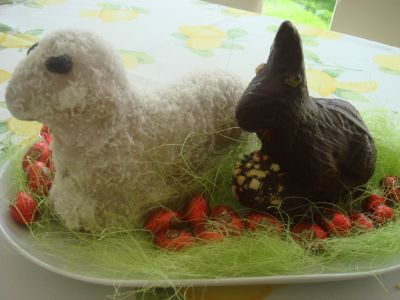

"Oh nein, oh nein, oh nein" hörte man eine Stimme über die Weite des Nordpols erklingen. Und wenn man jetzt ganz genau hinsah, konnte man einen kleinen braunen Hasen mit Mütze und Pfotenwärmer inmitten der Schneemassen erkennen, welcher in einem Wahnsinnstempo Haken schlug und so schnell rannte, dass man glauben könnte, es ginge um sein Leben.
Nun sind zweierlei Dinge natürlich erstaunlich. Das wäre zum Ersten das Vorkommen eines braunen Hasens am Nordpol und zum Zweiten die Tatsache, dass es ein sprechender Hase ist. Da aber auch wir uns in einer magischen Welt befinden, soll uns das nicht weiter beunruhigen.
"Wie konnte ich bloß so die Zeit vertrödeln?" hörte man erneut die Stimme des Hasens, der inne gehalten hatte und sich umsah. Der Weihnachtsmann hat gut reden: Du kannst es gar nicht verfehlen, es ist ganz einfach zu finden, hatte er zu ihm beim Abschied gesagt. Tja, vermutlich war es für so einen großen Weihnachtsmann, der sich hier auskannte auch nicht schwierig. Aber er, der kleine Osterhase, der noch nie zuvor am Nordpol gewesen war, sah sich einer komplett weißen Schneelandschaft gegenüber, die in alle vier Himmelsrichtungen gleich aussah. Also weiter aufs Geratewohl, was anderes würde ihm wohl nicht übrigbleiben.
Er war noch nicht weit gekommen, als er plötzlich eine Bewegung im linken Augenwinkel wahrnahm. Was war das, fragte er sich und starrte angestrengt in die Richtung. Er konnte allerdings nichts erkennen. So lief er weiter. Da, schon wieder. Abermals glaubte er eine Bewegung ausgemacht zu haben. Das durfte doch alles nicht wahr sein. Er, der Osterhase, kurz vor Ostern allein am Nordpol und nun litt er auch noch an Verfolgungswahn. Er schüttelte sich. Vermutlich habe ich schon Wahnvorstellungen wegen der Kälte, die ich ja gar nicht gewöhnt bin, dachte er. Und die kleinen Pfotenwärmer und das kleine Mützchen halfen auch nicht so recht gegen dieses nasskalte Wetter. Ach, sei nicht undankbar, schalt sich der Osterhase, deine Frau hat dir die Sachen ja auch nicht für eine Expedition zum Nordpol geschenkt, sondern eben einfach für etwas kühlere Tage. Also weiter. Keine Müdigkeit vorschützen, die Zeit drängt.
Doch da nahm er plötzlich wieder eine Bewegung war. Diesmal genau vor sich. Und nein, es war keine Einbildung. Da war etwas. Etwas Großes...Riesiges... Weißes und... Haariges. Oh Gott, schoss es dem Osterhasen durch den Kopf, ein Bär. Ein Nordpolarbär. Der Weihnachtsmann hatte ihn ja gewarnt, aber auch gleichzeitig versichert, dass die Bären sich um diese Zeit nur selten zeigten. Tja, auch ein Weihnachtsmann konnte sich wohl irren. Was soll ich jetzt tun? Wer von uns beiden ist wohl schneller überlegte der Hase. Eine Flucht könnte ich gewinnen, allerdings bin ich meilenweit zu sehen, und ich sehe den Bären höchstens, wenn er mir schon wieder viel zu nahe ist. Aber etwas anderes bleibt mir wohl nicht übrig. "Also lauf!", feuerte sich der Hase nahezu lautlos an und nahm sprichwörtlich die Beine in die Hand. Er achtete kaum noch auf den Weg, sondern rannte so schnell er konnte und schlug Haken so oft es ihm möglich war auf diesem rutschigen Untergrund. Schon nach kurzer Zeit hatte er vollkommen die Orientierung verloren und war sich nicht einmal mehr sicher, aus welcher Richtung er gekommen war. Von da links, oder? Nein, von rechts, diskutierte er lautlos mit sich selbst. Ich habe keine Ahnung, musste er dann zugeben, hielt kurz inne und wagte es sich umzusehen. Kein Nordpolarbär zu sehen. Vermutlich habe ich ihn abgehängt. Gott sei Dank, aber was nun? Ratlos sah er sich um.
Da entdeckte er in der Ferne ein schwaches, rotes Leuchten. Konnte es sein, dass... Nein, das ist nicht möglich. Oder doch? Sollte etwa Rudolph das rotnasige Rentier, auf der Suche nach ihm sein. Zaghaft machte er sich auf den Weg in Richtung des Leuchtens.
Es dauerte eine ganze Weile bis er so nah herangekommen war, dass sich für sein Auge Umrisse erkennen ließen. Und ja, es schien, als hätte er recht gehabt. Dort in der Ferne sah er ein Rentier mit rotleuchtender Nase. Das konnte nur Rudolph sein. Fröhlich wollte er schon losrennen, als er abermals eine Bewegung kurz vor sich registrierte. Oh nein, der Nordpolarbär. Er hatte ihn also doch nicht abgehängt. Was sollte er jetzt tun. Der Bär befand sich genau zwischen ihm und Rudolph. Ob es ihm gelänge den Bären zu verwirren und eine Richtung anzutäuschen und dann in die andere zu verschwinden. So machte er es ja sonst mit Füchsen. Hm, aber hier am Nordpol würde das wohl nicht klappen, er war einfach zu auffällig und viel zu weit zu sehen. Während er grübelte, ging er langsam rückwärts, um den Abstand zwischen sich und dem Bären möglichst groß zu halten.
Als er plötzlich ein Geräusch hinter sich hörte, sich erschrocken umdrehte und genau in Rudolphs leuchtendrote Nase blickte. "Da bist du ja", hörte er Rudolph sagen. "Los, steige auf, wir warten schon eine Ewigkeit auf dich." Glücklich ließ sich der Osterhase auf Rudolphs Rücken nieder und erlebte gebannt, wie Rudolph abhob und mit ihm durch die Lüfte glitt.
{{img src="../../img/ostern/text/gryffnordpol.jpg" alt="" class="center" }}"Der Weihnachtsmann hat sich große Sorgen um dich gemacht. Und dachte, dass es doch unvorsichtig sei, dich hier am Nordpol allein gehen zu lassen. Sodass er sich auf den Weg zu uns gemacht hat. Und er war ziemlich erschrocken, dass du noch nicht eingetroffen warst, sodass wir uns alle sofort auf die Suche gemacht haben." Rudolph lächelte. "Ich hab noch nie zuvor den Osterhasen getroffen, es ist mir eine Ehre. Zumal das mit dem Bären eben ganz schön knapp aussah." "Ja", pflichtete der Osterhase ihm bei. "Hab vielen Dank für die Rettung. Und es ist wirklich toll auf einem Rentier zu fliegen."
Kurze Zeit später hatten die zwei die Rentierstallungen erreicht, wo auch der Weihnachtsmann sie schon ungeduldig erwartete. "Gott sei Dank ist dir nichts passiert mein Herr Kollege", brummte er. "Ich habe beschlossen dich noch ein Stück zu begleiten. Komm mit auf meinen Schlitten. Rudolph und die anderen Rentiere werden uns ziehen."
Glücklich über den guten Ausgang seines Nordpolabenteuers glitt der Osterhase zum Weihnachtsmann in den Schlitten und ließ sich erschöpft auf der kuscheligen Sitzbank nieder. Das 'Auf, auf ihr lieben Rentiere' vom Weihnachtsmann hörte er schon kaum mehr richtig, denn er war schon eingeschlafen. Er wusste, der Weihnachtsmann würde ihn wecken, wenn sie das Festland erreicht hatten, und wer weiß, was ihm da noch für Abenteuer auf seiner Reise bevorstehen würden.
Möwen-Kreischen, der kühle, brausende Wind in den langen Ohren und die sanften Sonnenstrahlen, die sein Fell kitzelten - das waren die ersten Empfindungen, die der Osterhase spürte, als er von Bord des kleinen Fischerbootes an Land stieg. Er bemerkte außerdem auch sogleich, wie ruhig und entspannt es an diesem Ort war. Kein Lärm oder Rufe traten an sein Ohr, nein, ein Frieden herrschte hier vor, der nichts mit den anderen Großstädten, die er zuvor gesehen hatte, gemein hatte. Genüsslich sog er die Luft durch seine kleine Nase ein und lächelte zufrieden. Hier in Portrush an der Küste Nordirlands wollte er sich heute umschauen, bis er weiter ziehen musste.
Als die Schritte des Osterhasen ihn in Richtung des Herzens des kleinen Dorfes trugen, bemerkte er das saftige Grün des Grases, das hier überall am Wegrand und auf Wiesen und Feldern wuchs. Es sah herrlich frisch und gesund aus. Der Osterhase hatte noch keinen vergleichbaren Grünton bei Gras gesehen und ohne lange zu überlegen blieb er stehen und rupfte sich ein paar Halme. Sie schmeckten köstlich! Mit geschlossenen Augen entfaltete sich der Geschmack noch besser auf seiner Zunge und der Osterhase gab einen kleinen wohligen Seufzer von sich. Dann setzte er seinen Weg fort. Als er an die erste Straße kam, die sich durch das Dorf schlängelte, sah er die wenigen Häuser die, mal hier mal da, von den Menschen erbaut worden waren. Es waren kleine, niedliche Häuser mit braunen Dächern wie Mützen und sie luden dazu ein, es sich in ihnen vor einem warmen Kamin gemütlich zu machen und heiße Schokolade zu trinken. Doch der Osterhase hatte trotzdem anderes vor. Er wollte den Strand und das Meer mit seiner unendlichen Weite sehen. Und so hoppelte er weiter, bis er an eine lange, graue Mauer kam, die sich am Rande dessen erstreckte, was der Osterhase als Strand erahnte. Bisher konnte er noch nicht über die Mauer hinüber blicken. Links von sich sah er jedoch den Hafen des kleinen Dorfes, mit seinen Schiffen und Booten, die sich sanft in den Wellen bewegten. Es war ein wundervoller Anblick.
Der Osterhase wandte den kleinen Kopf hin und her, doch er konnte beim besten Willen keinen Blick auf den Sandstrand erhaschen. Ein wenig enttäuscht versuchte er, an der Mauer entlang zu hopsen um vielleicht irgendwo einen Durchgang zu erspähen, doch vergeblich. Der Weg setzte sich schier unendlich fort und der Osterhase wurde allmählich müde. Da hörte er in seinem Rücken eine junge Stimme. "Was machst du denn hier? Du gehörst sicher nicht hier her..." Die Worte wurden in einer fremden Sprache gesprochen, doch der Hase verstand sie, denn er hatte auf seinen Reisen beinahe alle Sprachen perfekt sprechen gelernt. So wandte er sich um und erblickte einen kleinen Jungen im Alter von höchstens 10 Jahren. Der Osterhase zog es vor, ihm nicht zu antworten, denn er wusste nicht, wie der Junge damit umgehen würde, wenn er plötzlich einen sprechenden Hasen vor sich hatte. Nur wenige Menschen kamen in so einer Situation ohne Schrecken davon, das wusste der Osterhase und so hielt er den Mund und bewegte stattdessen seinen Kopf in Richtung der Mauer, mehrmals und fordernd. "Dahinter kannst du das Meer sehen", erklärte der kleine Junge ihm als Antwort und lächelte mit strahlenden Augen, "Es ist wunderschön." Der Osterhase hätte beinahe mit den Augen gerollt. Soviel wusste er. Doch wie gelangte man dorthin? Erneutes Kopfnicken.
"Soll ich es dir zeigen? Ich habe heute sowieso nichts mehr zu tun. Es ist schulfrei und Mutter kocht gerade noch Mittag." Angestrengt versuchte der Osterhase ein glückliches Gesicht zu machen, was schwierig ist, wenn man nicht das gleiche Gesicht hat, wie der, dem man es vermitteln möchte. Doch der Junge verstand. Kurzer Hand hob er den Osterhasen empor und stapfte mit ihm ein paar Meter.
"Weißt du... Ich will hier niemals weg. Auch nicht, wenn ich später groß bin und ein eigenes Haus haben kann. Ich will hier bleiben und Fischer werden", plauderte der Junge und drückte den Hasen an sich. "Du wirst auf dem gesamten Erdball keinen Ort finden, der so friedlich und wunderschön ist, wie Portrush, meine Heimat." Der Osterhase war ein guter Zuhörer, fand er, vor allem deshalb, weil er ja noch immer nichts sagen durfte. Nach einer Weile, in der der Junge ihm beinahe seine gesamte Kindheit erzählt hatte, hörte die Mauer plötzlich auf und sie gelangten an eine steile Treppe. Der Osterhase machte große Augen, denn er konnte nun endlich den fantastischen Strand und das blaue Meer dahinter erspähen. Nun fiel es ihm schwerer, dem Jungen zu lauschen, denn seine Sinne wurden ganz und gar von dem gefordert, was er da sah. Während sie hinunter liefen, saugte der Osterhase das Bild in sich ein: Ein weiter, unendlich langer Sandstrand, der ab und an Spuren bildete, wohl durch den Wind verursacht. Im Hintergrund an den Seiten einige wenige von den kleinen Häusern mit ihren Mützen, die er vorhin schon gesehen hatte. Und dann natürlich das Meer, blau, weit und wunderbar. Die See war vollkommen glatt, nur wenige Wellen spülten an den Sand und als der Junge näher trat, konnte der Osterhase auch ein paar Möwen erspähen. Sie warfen sich immer mal wieder hinab ins Wasser um dann, wenn sie Glück hatten, mit einem Fisch im Mund wieder empor zu schweben. Die Frühlingssonne glitzerte auf dem Wasser und machte alles perfekt. Dem Osterhasen stand bei so viel Schönheit förmlich der Mund offen.
"Fantastisch." Hätte er gekonnt, hätte er sich urplötzlich die Pfote vor den Mund geschlagen. Das Wort war ihm zwar leise, aber einfach so heraus gerutscht! Erschrocken schaute er nach oben. Der Junge starrte ihn ungläubig an. "Hast du gerade...?" "Nein?"
Erleichtert sah der Osterhase dann aber, wie sich ein Grinsen auf dem Gesicht des Kleinen ausbreitete. "Doch hast du. Du kannst sprechen." "Nur manchmal." Beide lächelten sich auf ihre Art an und der Junge ließ sich in den Sand sinken. "Das ist ja genial. Ich wusste schon, dass es Tiere gibt, die so was können. Aber ich dachte, das wären dann Animagi." Amüsiert rümpfte der Hase die Nase. "Wer sagt dir denn, dass ich keiner bin?" Verblüfftes Schweigen war die Antwort. Zufrieden schaute der Osterhase auf das offene Meer und lauschte dabei auf die ruhige Atmung des Jungen. Schon lange hatte er nicht mehr so viel Frieden und Ruhe empfunden und er fand, dass das hier um Längen besser war, als Großstadtlärm, Autoqualm und Menschenmassen. Er erinnerte sich an die Worte des Jungen. Vielleicht konnte ja auch er später, wenn er alt war, wieder her kommen und ein geruhsames Leben führen? Dass das hier der perfekte Ort dafür war, da war er sich sicher.
{{img src="../../img/ostern/text/gryffbretagne01.jpg" alt="" class="left"}} Ein rauer Wind blies ihm ins Gesicht, als er durch die kleine Stadt hopste, die eigentlich nicht viel größer wie ein gewöhnliches Dorf war. Dennoch hatte sie ein eigenes Rathaus und einen eigenen Bürgermeister. Ein wenig müde war er nun von seiner kleinen Wanderung, die ihn seit gestern Nachmittag von der Küste ins Landesinnere der Bretagne geführt hatte. Er brauchte dringend eine Rast und ein gutes Mittagessen, das ihn wieder aufwärmte. Er ging über eine Brücke, die so klein und niedrig war, dass kein Boot durchfahren konnte. Zu seiner Rechten lag ein Wirtshaus. Schon von weitem sah er, dass alle Tische belegt waren. So ging er weiter und setzte sich erschöpft auf eine Bank, die vor einem kleineren Haus aufgestellt worden war. Ihm taten jetzt schon die Pfoten weh, obwohl er noch einen halben Tagesmarsch vor sich haben würde. Eine Frau mit braunem, lockigen Haar steckte ihren Kopf aus einem Fenster des Hauses und sprach zu ihm: "Komm doch herein, hier draußen erkältest du dich sonst nur. Hungrig bist du sicher auch. Bei mir bekommst du eine warme Frühlingssuppe."
Dankend nahm er ihr Angebot an und schon verschwand ihr Kopf aus dem Fenster. Kurz danach öffnete sich die Tür des Hauses und die Frau gewährte dem Osterhasen Einlass . Sie trug ein violettes Kleid unter einer braunen, leicht bemehlten Küchenschürze. Trotz ihres mittleren Alters schien sie noch nichts von ihrer Schönheit eingebüßt zu haben. Auch hatte sie noch kein einziges graues Haar. Er bedankte sich abermals, aber sie meinte, das sei doch selbstverständlich. "Schließlich erlebe ich es nicht alle Tage, dass der Osterhase bei mir vorm Haus sitzt", meinte sie mit einem Strahlen im Gesicht. So was, dachte er bei sich, schaute sie aber nur lächelnd an. "Wenn ich es bemerken darf, bei Ihnen riecht es wie frisch gebacken", sagte er zu ihr. "Wollen wir uns nicht lieber duzen?", entgegnete sie. Er nickte nur. "Ja, ich habe gerade Baguettes aus dem Backofen geholt und anschließend backe ich noch einen Hefezopf. Wenn du möchtest, kannst du gerne zuschauen oder auch mitmachen. Nun aber wird erst einmal gegessen, sonst wird die Suppe noch kalt." Ja, das würde er sich nicht entgehen lassen. Es war eine für die Region typische Suppe mit Fisch und Meeresfrüchten. Sie brach ein Stück von einem der frisch gebackenen Baguettes ab und reicht es ihm. Die Suppe und das frische Baguette schmeckten hervorragend. Er war wirklich froh, wieder etwas Warmes im Bauch zu haben. "Ich helfe dir beim Hefezopf mit. Was muss denn zuerst getan werden?", dabei schob er seinen leeren Suppenteller zur Seite. "Hat dir die Suppe geschmeckt?" Der Osterhase nickte, leckte sich dabei den Mund ab und rieb sich den Bauch, bevor er aufstand. "Na fein, dann legen wir sogleich los." Sie schaute auf die Zutatenliste:
Süßer Hefezopf
Für zwei Hefezöpfe benötigen Sie:
"Zuerst müssen wir das Mehl in eine große Schüssel sieben und in der Mitte ein kleines Loch machen. Dort geben wir die Hefe hinein und Zucker darüber. Bei einem Stück Frischhefe muss ein wenig lauwarme Milch dazu und mit Mehl abgedeckt werden. Dann sollte die Hefe eine Viertelstunde ruhen. Wir nehmen aber ein Päckchen Trockenhefe, denn das geht schneller. Auf die Hefe geben wir also den Zucker und die Milch. Das wird zunächst vermengt, bevor die restlichen Zutaten dazugegeben werden. Rühr doch schon einmal. Ich hole die anderen Zutaten noch." Der Osterhase nahm sich die Knethaken und Rührgerät, steckte sie ins Rührgerät und legte fleißig los. Währenddessen wog und maß die Frau die anderen Zutaten ab. Hinzu kamen noch Salz, Margarine, Eier und geriebene Mandeln. Außerdem rieb sie von einer Orange die Schale ab und gab diese noch zum Teig. "Wer keine unbehandelte Orange hat, kann auch klein gehacktes Orangeat nehmen", bemerkte sie. "Schön kräftig durchkneten", sagte sie über beide Wangen strahlend. "Nun muss der Teig etwa eine Stunde an einem warmen Ort ruhen, es sollte nicht zu heiß und nicht zu zugig sein." Sie legte ein dickes Tuch um die Schüssel und stellte sie in die Nähe ihres warm geheizten Kachelofens. Ostereier mal anders
"Jetzt haben wir noch genügend Zeit, um etwas zu basteln. Ich habe von meiner Nachbarin eine schöne Bastelanleitung für eine Kugel in Form eines Dodekaeders bekommen. Vielleicht hast du Lust mitzubasteln. Ich finde diese Kugeln so schön, weil man darin zum Beispiel ein Geschenk gut verpacken kann." Klasse Idee, dachte sich der Osterhase und war sofort dabei. Sie nahm ein weiteres Blatt Papier aus der Schublade eines Schrankes und ging damit in die Wohnstube. Küche und Wohnstube verband nur eine Schiebetür, die hier wohl tagsüber immer offen stand. Sie kramte Papier in den schönsten Farben heraus. "Wichtig ist, dass sie in DIN-Norm-Format sind, also A4, A5, A6 oder vielleicht auch noch kleiner. Sonst erhält man keine Flächen in Form von Parallelogrammen. Diese Kugel soll etwas bunter werden, daher nehmen wir verschiedene Farben", erklärte sie ihm kurz und legte zwölf zugeschnittene Blätter, je zwei in rot, blau, grün, gelb, orange und weiß auf den Tisch im Zimmer. "Am besten halbiert man immer ein A4-Blatt so lange, bis man die gewünschte Größe erhält." Sie bot dem Osterhasen einen Stuhl an und setzte sich dann selbst auf einen der anderen Stühle am Tisch.
Jeder nahm sich ein Blatt Papier und dann erklärte sie: "Als erstes faltest du in der Mitte des Blattes eine Linie, indem du die kurzen Seiten aneinanderlegst. Im zweiten Schritt faltest du je von links und rechts zum entstandenen Mittelfalz zwei neue Linien. So hast du drei Linien längs der kurzen Seite erhalten. Lege das Blatt so vor dich, dass die lange Kante zu dir hinzeigt. Nun, im dritten Schritt, faltest du die untere linke Ecke bis zur dritten Linie von links und legst dabei die Ecke oben rechts an die Kante der langen Seite. Diesen Schritt wiederholst du mit der unteren rechten Ecke, drehst das Blatt um 180 Grad und wiederholst beide Schritte für die restlichen beiden Ecken. Jetzt hast du in der Mitte des Blattes ein Parallelogramm mit gleich langen Seiten erhalten. Alle weiterführenden Linien durch das Falzen benötigst du für den allerletzten Schritt, bei dem das Papier in Form gelegt wird. Deswegen solltest du Falze betont nachziehen. Dafür habe ich hier für jeden einen Löffel, damit es besser geht." Der Osterhase nahm sich einen Löffel und zog seine Falze nach. "Nun, der nächste Schritt. Du nimmst wieder eine der beiden linken, unteren Ecken, faltest sie nach oben rechts und faltest dazu die rechte untere Ecke nach oben und ziehst die Kante betont nach. Wenn du wieder auffaltest, kannst du erkennen, dass eine neue kleine Linie rechts von der Mittellinie entstanden ist. Diesen Schritt wiederholst du mit der linken Ecke auf der anderen langen Kante. Die Linien, die du im zweiten Schritt gefalzt hast, müssen noch einmal so nachgefalzt werden, dass sie sich nach oben wölben. Zu guter Letzt legst du das Papier in Form. Dazu drückst du die kurzen Falze mittig der langen Kante so, dass sie je auf einer der Linien liegen, die das Parallelogramm in der Mitte bilden. Dabei legen sich die restlichen Falze ineinander und am Parallelogramm bilden sich zwei Dreiecke, wenn man das Blatt auf der Rückseite betrachtet. Die überstehenden Flächen werden jeweils in Richtung der Dreiecke umgeklappt. Super, du hast einen Teil des Dodekaeders fertig! Du wiederholst nun alle Schritte auch mit den restlichen zehn Blättern Papier." Sie schaute auf die Uhr und meinte: "Es wird Zeit für den Hefezopfteig." Der Osterhase sprang erschrocken auf. Den Teig hatte er ja schon fast vergessen!
|
Schritt 1: {{img src="../../img/ostern/text/gryffbretagne_Schritt-1.jpg" alt="" class="left"}} |
Schritt 2: {{img src="../../img/ostern/text/gryffbretagne_Schritt-2.jpg" alt="" class="left"}} |
Schritt 3a: {{img src="../../img/ostern/text/gryffbretagne_Schritt-3a.jpg" alt="" class="left"}} |
Schritt 3b: {{img src="../../img/ostern/text/gryffbretagne_Schritt-3b.jpg" alt="" class="left"}} |
|
Schritt 4a: {{img src="../../img/ostern/text/gryffbretagne_Schritt-4a.jpg" alt="" class="left"}} |
Schritt 4b: {{img src="../../img/ostern/text/gryffbretagne_Schritt-4b.jpg" alt="" class="left"}} |
Schritt 5a: {{img src="../../img/ostern/text/gryffbretagne_Schritt-5a.jpg" alt="" class="left"}} |
Schritt 5b: {{img src="../../img/ostern/text/gryffbretagne_Schritt-5b.jpg" alt="" class="left"}} |
|
Schritt 5c: {{img src="../../img/ostern/text/gryffbretagne_Schritt-5c.jpg" alt="" class="left"}} |
Schritt 5d: {{img src="../../img/ostern/text/gryffbretagne_Schritt-5d.jpg" alt="" class="left"}} |
Schritt 5e: {{img src="../../img/ostern/text/gryffbretagne_Schritt-5e.jpg" alt="" class="left"}} |
Schritt 6: {{img src="../../img/ostern/text/gryffbretagne_Schritt-6.jpg" alt="" class="left"}} |
|
Schritt 7a: {{img src="../../img/ostern/text/gryffbretagne_Schritt-7a.jpg" alt="" class="left"}} |
Schritt 7b: {{img src="../../img/ostern/text/gryffbretagne_Schritt-7b.jpg" alt="" class="left"}} |
Beispiele 1: {{img src="../../img/ostern/text/gryffbretagne02.jpg" alt="" class="left"}} |
Beispiele 2: {{img src="../../img/ostern/text/gryffbretagne03.jpg" alt="" class="left"}} |
Er hopste der Frau hinterher und stellte sich an den mit Mehl bestreuten Tisch. Den Teig nahm sie aus der Schüssel und legte ihn auf den Tisch. Nun teilte sie ihn in acht gleiche Teile, legte sechs davon zur Seite und gab dem Osterhasen einen siebenten Teil. Den achten Teil legte sie vor sich. "Jede Kugel müssen wir zu einer Rolle formen, die etwa 80 Zentimeter lang ist. Wichtig ist, dass alle etwa gleich lang sind." So formten sie schnell aus allen acht Kugeln mit den Händen bzw. Pfoten lange Rollen. Während der Osterhase die letzte Rolle noch formte, schlug die Frau bereits ein Ei auf und trennte Eiweiß von Eigelb, indem sie das Eigelb immer wieder von einer Eierschalenhälfte in die andere kippte und das Eiweiß in eine kleine Schale fließen ließ. "Nun legst du vier Rollen nebeneinander und drückst die oberen Enden mit etwas vom Eiweiß aus der Schale zusammen", erklärte sie, zeigte auf die kleine Schale und tat es mit ihren vier Rollen gleich. Gesagt, getan. "Jetzt flechten wir daraus je einen Zopf. Du fängst am besten mit der rechten Rolle an, legst sie über die erste Rolle links von ihr, dann unter die nächste Rolle, noch einmal über die letzte Rolle und legst die Rolle nun ganz links zur Seite. Das gleiche machst du mit der nächsten Rolle, die nun ganz rechts liegt, usw. Wenn du noch einmal nachschauen willst, wie es aussehen soll, habe ich hier ein einfaches Bild." Sie legte dem Osterhasen eine Skizze zu seiner Linken. "Vielen Dank", sagte er, "Ja, so versteh ich es ganz gut." Zum Schluss drückten sie die Teigenden zusammen. Nun nahm sie zwei feuerfeste Schüsseln und setzte sie mit der Öffnung nach unten auf ein Blech mit Backpapier. Ihre fertigen Zöpfe legten sie um die umgekippten Schüsseln auf dem Blech. Die beiden Teigenden je eines Zopfes verbanden sie miteinander. Das Eigelb und einen Esslöffel Milch verquirlte die Frau zu einer Masse, mit welcher sie ihre Zöpfe bestrichen. "Nun müssen sie nur noch bei 180 °C Umluft 35 Minuten backen."
{{img src="../../img/ostern/text/gryffbretagne04.png" alt="" class="center"}}
Der Osterhase nickte. In dieser Zeit falteten sie die restlichen Parallelogramme und steckten jeweils die Spitzen eines Parallelogramms in das durch das Falten entstandene Loch eines zweiten Parallelogramms. Zum Schluss hielt der Osterhase eine eher eckige und etwas in die Länge gezogene Kugel in der Pfote. "Sieht echt Klasse aus. Darf ich diese mit nach Hause nehmen?", fragte er sie. "Mir kommt da so eine Idee", meinte er zwinkernd. "Natürlich, es ist schließlich dein Werk", lächelte sie ihm zu. "Wenn die Hefezöpfe fertig sind, packe ich dir deinen ein." "Oh, vielen Dank." "Nichts zu danken", meinte sie nur. "Nun mach es dir auf dem Sofa bequem. Ich hole uns noch einen heißen Kakao. Dann erzählst du mir, wie es dich um diese Zeit in die Bretagne verschlagen hat." Der Osterhase grinste: "Das ist eine lange Geschichte." "Na, dann bleibst du eben über Nacht hier und setzt morgen deine Reise fort." So saßen sie noch lange bis in die Nacht in der Wohnstube, bis sie ihm sein Bett im Gästezimmer zurechtmachte. Nach dem Frühstück am nächsten Morgen brach der Osterhase mit einer bunten, eckigen Kugel und einem süß duftenden Hefezopf im Gepäck auf.
Ein lautes Brummen und ein Ruck zog durch den komischen langen Raum, in dem der Osterhase in einer Box saß. "Oh Mami, wir sind da", sagte das Mädchen, das auf dem Sitz beim Osterhasen saß. Der Osterhase saß nun seit etwa 8 Stunden in dieser Box, denn da wurde er, als er auf dem Weg zu den Osterinseln war, von dem kleinen Mädchen auf dem Gehweg hineingesteckt. Das Mädchen namens Lilly wollte den Hasen als Haustier behalten und auch mit in den Urlaub nach Madrid nehmen. Einerseits war der Osterhase froh darüber, dass er im Flugzeug saß, denn er war den Osterinseln nun ein ganzes Stückchen näher, aber andererseits wusste er nun nicht weiter, denn er kannte sich in Madrid nicht aus. Jedes Jahr ging seine Reiseroute durch Italien, doch dieses Jahr sollte es anders sein. Nun tüftelte der Osterhase einen Plan aus, um Lilly irgendwie zu entwischen, denn sonst würde er gar nicht auf den Osterinseln ankommen.
Auf dem Weg vom Flugzeug zur Gepäckausgabe fielen dem Osterhasen viele Jugendliche auf, die teilweise Flaggen ihrer Heimatländer bei sich trugen. Was zum Osterhasen ist denn hier los, fragte sich der Hase. Außerhalb des Flughafens "Barajas International" und auf dem Weg vom Flughafen zum Hotel änderte sich nichts. Überall waren Jugendliche. "Mami, warum sind hier so viele Leute mit den bunten Tüchern?" fragte Lilly und deutete auf die Jugendlichen mit den Flaggen. "Dieses Jahr findet der Weltjugendtag über Ostern in Madrid statt. Da treffen sich die Jugendlichen aus der ganzen Welt, um ihren Glauben zu feiern", erklärte Lillys Mutter. Der Osterhase neigte den Kopf nach unten und patschte das Pfötchen gegen die Stirn. Natürlich, dieses Jahr findet ja der Weltjugendtag hier in Madrid statt. Wie konnte ich das nur vergessen, fragte sich der Osterhase. Ab und zu steckte Lilly dem Osterhasen ein Stück Karotte in die Box und er mümmelte genüsslich rum. Doch er wollte endlich wieder raus und über grüne Wiesen hoppeln.
Als sie im Hotel ankamen, wurde der Mutter von Lilly mitgeteilt, dass hier keine Nagetiere erlaubt seien. Als der Osterhase das hörte. führte er einen Osterhasen-Freudentanz auf, doch als sein Blick auf die traurige Lilly fiel, musste er sich eine Träne wegwischen. Er wollte nie, dass jemand wegen ihm traurig ist, doch es war das Beste für den Hasen. Somit wurde der Osterhase auf der grünen Wiese vor dem Hotel ausgesetzt. "Bitte pass auf dich auf", sagte Lilly und tätschelte dem Osterhasen den Kopf."Ich werde dich vermissen." Da es nun Abend war, beschloss der Osterhase erst mal hier im Gebüsch zu übernachten.
Am nächsten Morgen machte sich der Osterhase auf den Weg, doch es fiel ihm schwerer als gedacht. Denn die vielen Jugendlichen waren auch heute unterwegs und somit musste der Osterhase aufpassen, dass er nicht zertrampelt wurde. "Oh, guck mal", sagte ein Junge und nahm den Osterhasen auf den Arm. Nicht schon wieder, dachte sich der Osterhase. Doch andererseits war er hier sicherer. "Komm, wir nehmen ihn mit zur Eröffnungsmesse auf dem Plaza d'Espagna. Vielleicht kann ein Priester ihn segnen", sagte der Junge, der seiner Flagge nach zu urteilen aus Polen kam.
Die Eröffnungsmesse war wunderschön. Und ein Priester hatte das Tier mit den Löffelohren sogar gesegnet. Was sollte nun noch schief gehen, fragte sich der Osterhase. In einem Park beim Cibeles Platz setzte der Junge den Osterhasen wieder ab und nun konnte die Reise des Osterhasen weitergehen. Er entschloss sich einer Gruppe Italiener zu folgen, die Richtung Norden lief, doch es fiel ihm sehr schwer beim Tempo mitzuhalten. Nach 45 Minuten gab der Osterhase auf, der Gruppe weiter zu folgen, denn er war so außer Atem, dass er nun erstmal was zu trinken brauchte.
Mittlerweile war es wieder abends und der Osterhase suchte nach einem geeigneten und sauberen Unterschlupf, was diesen Abend echt schwierig war, denn die Jugendlichen hatten überall ihren Müll hingeschmissen. Er hoppelte also durch die Stadt und verlor irgendwann die Orientierung. In der Nähe des Flughafens "Cuatro Vientos" fand er dann einen Park, der einigermaßen sauber war und wo er nun übernachten wollte.
Am dritten Tag in Madrid wurde der Osterhase von einem Lämmchen geweckt, welches ihn ableckte. "Hey nimm die Zunge weg", sagte der Osterhase und sprang auf. um ein paar Meter wegzuhoppeln. "Entschuldigung, aber ich wollte dich doch nur wecken, bevor die Jugendlichen wieder durch den Park trampeln.", versuchte das Lämmchen zu erklären. Der Osterhase nickte und bedankte sich bei dem Lämmchen. "Wie heißt du?", fragte der Osterhase das Lämmchen und es antwortete, dass es nie einen Namen bekommen hatte. Der Osterhase erzählte dem Lämmchen wer er war und das Lämmchen fing an zu lachen. "Ja klar, der Osterhase. Den gibt es doch gar nicht", sagte er und prustete wieder los. Der Osterhase war nun beleidigt und hoppelte davon. Unter einem Baum erschnupperte der Osterhase den Schlafplatz des Lämmchens und legte ein Osterei dort hin. "Wenn das nicht Beweis genug ist, dann weiß ich auch nicht weiter", sagte der Osterhase zu sich selber und machte sich weiter auf den Weg. Als der Osterhase an einen großen Busbahnhof, namens Moncloa, kam, hörte er ein Schnaufen hinter sich. Er drehte sich um und sah in die braunen Augen von dem kleinen Lämmchen. "Ich wollte mich entschuldigen und dich ein Stück begleiten", erklärte das Lämmchen etwas beschämt.
Die beiden verbrachten die nächsten Stunden und Minuten zusammen. Das Lämmchen war eine große Hilfe für den Osterhasen, denn es kannte sich in Madrid und der Umgebung sehr gut aus. Vier Stunden nachdem sie zusammen in Moncloa gestartet waren, kamen sie an einem riesigen Gebäude vorbei, an dem der Name "El Escorial" dranstand. Die Neugier der beiden Tiere wurde geweckt und somit betraten sie das Gebäude. Sie hatten gerade sechs Schritte gemacht, als sie lautes Fußgetrappel hinter sich hörten. "Ahhh!!!", schrien der Osterhase und das Lämmchen im Chor, als sie von großen Menschenhänden gepackt wurden. "Na, wen haben wir denn da?", fragte eine Frau in einem schwarzen Gewand und mit schwarzem Kopftuch, während sie die beiden kleinen Tierchen liebevoll streichelte. "Ihr kommt ja gerade richtig", sagte die Frau, die den Osterhasen auf den Arm genommen hatte. Das Lämmchen warf dem Osterhasen einen angsterfüllten Blick zu. "Das sind christliche Nonnen und bei den Christen gibt es doch das Opferlamm zu Ostern...", erklärte das Lämmchen dem Osterhasen, der nun ebenfalls Angst ausstrahlt. Auweia, dachte der Osterhase.
Die beiden Nonnen brachten die beiden Tiere in die Küche, wo andere Nonnen mit etwas beschäftigt waren, jedoch konnte man nicht erkennen womit. "Schaut mal, liebe Schwestern. Hier haben sich zwei kleine Helferlein zu uns verirrt", erzählte die eine Nonne und zeigte auf das kleine Häschen und das Lämmchen. Die beiden verstanden nun gar nichts mehr. Wobei sollten sie denn bitte helfen. Sie wurden auf der Arbeitsplatte abgesetzt, wo ein großes Buch mit Rezepten lag. Der Osterhase blickte zum Buch und dann zu den ganzen Zutaten, die daneben standen. "Verstehe ich das gerade richtig, wir sollen beim Backen helfen?", fragte der Osterhase und das Lämmchen nickte nur. Daraufhin warf der Osterhase nochmal ein Blick auf das Rezept.
Zutaten für ein Osterlamm
Für den Teig:
3 Eier
1 Eigelb
125 g Zucker
1 Pk. Vanillezucker
125 g Mehl
25 g Speisestärke
75 g Butter
Zum Verzieren:
Puderzucker
Zitronensaft
Kokosraspel
Kuvertüre
Zubereitung:
Die Eier, das Eigelb, den Zucker und den Vanillezucker schaumig schlagen. Das Mehl mit der Speisestärke vermischen, auf den Eischaum sieben und vorsichtig unterheben. Die Butter erwärmen, wieder abkühlen lassen und tropfenweise unter den Teig ziehen.
Die Osterlammform mit Butter ausfetten und mit Mehl und Semmelbröseln bestäuben.
Bei 180 °C ca. 35-40 Min. backen.
Danach aus dem Puderzucker, ein paar Tropfen Zitronensaft und Wasser den Zuckerguss anrühren und das Osterlamm damit bestreichen. Auf den oberen Teil werden nun die Kokosraspel gestreut und unten an den Füßen, wird die flüssige Kuvertüre aufgestrichen. Nun lässt man das Osterlamm abkühlen und wartet, bis die Verzierung getrocknet ist.

Der Osterhase schaute zum Lämmchen und auf beiden Gesichtern breitete sich ein Grinsen aus. "Gott sei Dank muss ich nur beim Backen helfen und nicht als Opferlamm hinhalten", sagte das Lämmchen, woraufhin der Osterhase nickte.
Beim Backen halfen beide fleißig mit und als es dann endlich ans Verzieren ging, konnte der Osterhase sich nicht mehr zurückhalten. Immer wieder schaute er über die Schüssel mit der flüssigen Schokolade und dann passierte es. Das Häschen hatte sich etwas zu doll auf den Rand der Schüssel gelehnt und... "BUMM!" Die Schüssel war umgefallen und zwar genau über den Osterhasen. Als eine Nonne die Schüssel aufhob, fingen alle an los zu lachen. Der Osterhase war von den langen Ohren bis zum kleinen Schwänzchen mit Schokolade bedeckt. Eine der Nonnen machte sofort ein Foto, um diesen Moment für immer festzuhalten. Auch das Lämmchen kullerte auf dem Rücken hin und her, weil es sich vor Lachen nicht mehr einkriegte.
Nachdem die Nonnen den beiden etwas Proviant gegeben hatten, verließen sie das Kloster und verabschiedeten sich voneinander. Es fiel den beiden echt schwer, denn sie waren mittlerweile Freunde geworden. "Kann ich dich mal auf den Osterinselm besuchen?", fragte das Lämmchen und der Osterhase nickte. Eine letzte Umarmung und schon ging es für den Osterhasen weiter Richtung Heimat.
Prolog - Vom Rasten und Reisen
Triefnass schleppte sich der Osterhase in sein heutiges Quartier für die bereits hereingebrochene Nacht, ein seelenleerer Bau direkt unter der Hauptwurzel eines großen Baumes. Die letzten Tage (ihm kam es eher wie Wochen vor) hatte es fast ununterbrochen geregnet. Nun da der Winter in seiner weißen Pracht vorbei zu sein schien, gab es vor den Schneeschmelzen kein Entrinnen. "Wenn es nur nicht immer so wie aus Eimern vom Himmel schütten würde!", jammerte er sich sein Leid vom Fell. Und wenn ihm die Zeit nur nicht davon rinnen würde. Oh je, bald ist Ostern und er musste den ganzen weiten Weg bis zu den Osterinseln zurückmarschieren. Aber sofort schien dies vergessen, so schwelgte er in Gedanken an seinen wahr gewordenen Traum. Bald würde er ein Stück der Route mit neuem Gefährt zurücklegen können. Ha! Wenn das nicht Zeit sparen würde. Wäre doch gelacht - er hielt inne. Tripp! Trapp! Tropf! ... Ach, nein das war nur ein blöder Regentropfen, dachte er verärgert und beobachtete im Mondlicht wie noch mehr auf den Boden und herausstehende Wurzelspitzen vor dem Eingang seines Quartiers fielen. Wie sehr hatte er sich schon an das Geräusch gewöhnt. Da sollte er doch eigentlich nicht mehr nervös werden? Das kam sicher von seinem Abenteuerfieber, sehr bald nach seiner hastigen Abreise vom Haus des Weihnachtsmannes kam er von einem Erlebnis ins andere, eines aufregender als das Andere. Da sehnte er sich nach so einem langen und sehr, sehr langweiligen Abschnitt seiner Rückreise doch nach etwas Abwechslung. Seufzend machte er es sich erst einmal auf seiner Decke gemütlich und packte eine schon etwas schrumpelige Möhre aus. Wie sehr er sich doch schon auf die guten Dinge daheim freute. Das erste Grün, die vielen Schmetterlinge, das summende, brummende Bienenvolk und ihre vielen Vettern und Cousinen, die ihm bei der Eiersuche über den Kopf hinweg flogen und immer ein nettes Versteck für die vielen Osternester hatten. Lustlos biss er in sein Abendessen und legte sich alsdann bald schlafsuchend auf den Boden.
Ein neuer Tag
Der junge Tag schien nur Gutes zu versprechen, so klar und warm wie seit langen nicht mehr strahlte die Sonne vom Himmel herab. Der Osterhase brach zur Weiterreise auf und gegen Mittag trat er an die Anlegestelle für die etwas kleineren Segelschiffe in einem kleineren Hafen. Noch schwammen sie alle in Reih und Glied nebeneinander im klaren Wasser zwischen Mittelmeer und Atlantik, so hatte die Segelsaison offiziell ja noch nicht begonnen hatte. Es hatte zwar über Nacht aufklärt, jedoch war das nach vorn angrenzende Land kaum zu sehen. Dafür gab es noch zu viele, wenn auch nur vereinzelte Nebelschwaden über dem Wasser. Ein Stück Papier wurde ihm in die Pfoten gedrückt, mit dem man wohl zum Halter des Segelboots erklärt wird.Das ist ja jetzt auch egal, dachte er sich, Hauptsache es konnte endlich losgehen! Seine Reise übers Wasser... Yippie, ich bin ein Seefahrer, hätte er sich fast aus dem Leib geschrien. Stattdessen begnügte er sich mit einem breiten Grinsen schon leicht abgewandt vom Seemann, der ihn gerade den Schein und noch weitere notwendige Dinge für das Segelboot ausgehändigt hatte. Dieser schien ihm auch gar nicht mehr wahrzunehmen und ging seiner täglichen Arbeit nach.
Nun kann die Reise beginnen
Auf, auf in die hohe See. Zunächst Richtung Afrika und nach einem kurzen Stopp soll es weitergehen, wohin ihn der Wind bläst. Die Karte und der Kompass würden ihm schon weiterhelfen. Apropos, dachte er, und langte in seine Tasche. Oh Schreck, er hat sie doch nicht etwa noch im Bau liegen gelassen?! Wollte er doch schon einmal für seine erste Route einen ersten Blick auf die Karte werfen. Und der Kompass? Ach was soll's! Ein echter Seemann, äh, Seehase weiß auch so die richtige Richtung, stellte er sich brustschwellend vor. Die Sonne zeigte direkt auf sein Ziel, also richtete er das Segel so aus, dass er direkt auf die Sonne zusteuerte. Und dann machte er es sich erst mal so richtig bequem, um sein Tagebuch fortzusetzen und dann ein Mittagsnickerchen zu machen. So verging die Zeit im Flug, ohne dass es der Osterhase merkte, und die Sonne neigte sich dem Horizont entgegen. Bevor er sich versah, wurde es dunkel und zudem kamen stürmische Winde auf. Schnell holte der Osterhase die Segel ein, um die Kontrolle über sein Schiffchen wieder zu erlangen. Zu spät, das Seil riss, der Mast kam dabei ins Schwanken... und im nächsten Moment fand er sich im kalten Nass wieder. Hastig schluckte er Meerwasser, igitt ist das salzig! Erbegann hektisch mit seinen Pfoten zu rudern. Eine Welle erfasste ihn und wirbelte ihn mit. Da konnte er noch seine Tasche erhaschen, die auch über Bord gespült wurde. Dann waren seine Erinnerungen weg.
Aqua est non par aqua
Als er seine Augen wieder öffnete, dachte er, er sei im Hasenhimmel gelandet. Doch da beugte sich jemand über ihn, bei dessen Anblick er sich erschrak und mit dem Kopf unsanft auf etwas Hartem aufkam. Marmorboden. Er wurde ohnmächtig. "Etwas mehr Taktgefühl könnte dir echt nicht schaden, du hast ihn ja gleich zu Tode erschreckt!", hörte er eine angenehm sanfte, aber hohe, weibliche Stimme. " Jetzt mach mal halblang, Aquarita!", entgegnete eine ziemlich stumpfe, männliche Stimme. "Nein, ich mein es ernst. Du solltest mal etwas an dir arbeiten." "Ach komm schon -" "Pst, er kommt zu sich..." "- und du sagtest ich hätte -" "Pst!", wurde er je wieder unterbrochen. Der Osterhase zog seinen Kopf vorsichtig nach oben, stoppte aber sofort, so sehr tat ihm der Kopf vom vorherigen Aufschlag weh. "Ein Kissen!" Etwas Weiches wurde ihm unter den Kopf geschoben. So weich, ein unbeschreiblich gutes Gefühl. "Wasser!" "Als ob wir hier nicht genug hätten -" "Schnell!" "Schon gut..." Dem Osterhasen wurde etwas wie eine Schale an seine Lippen geschoben, im nächsten Moment spürte er über seine Kehle Wasser rinnen, so klar und rein wie er nirgends woanders je getrunken hatte. Dann hörte er die Frau zu ihm sprechen: "Wie fühlst du dich? Bist du okay?" "Abgesehen von den Kopfschmerzen... Hm, wo bin ich?" "Na, alles bestens. Weißt du, wir sagen es nicht jedem, der zu uns kommt, aber du schaust vertrauenswürdig aus... Also gut: Herzlich willkommen in Atlantis!" Da schnappte er erst mal nach Luft. "Atlantis? Aber..." Langsam setzte er sich auf und schaute sich um. Staunend erblickte er eine Art Eingangshalle, wenn man das so nennen durfte. So reich verziert und grazil alles aussah, könnte es auch ein ganzer Saal sein. Das Bernsteinzimmer schienda noch zu untertrieben, abgesehen davon, dass hier nicht alles in Gold-gelb, sondern - wie soll es anders sein - in ein Türkis-blau und dezentes Grün getaucht war.
Versunken und unvergessen
{{img src="../../img/ostern/text/gryffatlantis01.png" alt="" class="left"}} Er kam aus dem Staunen nicht mehr heraus. Er musste aufstehen, herumlaufen und ein paar der Eis- ähm nein- Wasserskulpturen begutachten und berühren. "Neii...!" "Klappe, Aqualis! ... und ich darf wieder polieren!", wisperte er zurück. "Nicht jetzt", versuchte sie die Debatte schnell wieder zu beenden. Kurz huschte ein leicht verliebter und auch ein wenig verärgerter Blick über ihr Gesicht, dann setzte sie wieder ihren gastfreundschaftlichen Blick auf. Endlich fand der Osterhase seine Sprache wieder: "Atlantis gibt es doch eigentlich schon lange nicht mehr." "Nun ja vielleicht für die Menschen, nicht für uns." Dann erst wanderte der Blick des Osterhasen von ihrem Gesicht nach unten. Er erschrak und machte gleich mehrere Hopser nach hinten und stieß beinahe eine Skulptur um. Nun ja, wenn er sie genau betrachtete, schwebten sie wohl und schienen von unsichtbaren Seilen am Boden gehalten, um nicht an die Decke des Raumes zu steigen. Die beiden hatten keine Beine. Flossen musste man es wohl eher nennen. Sonst jedoch trugen sie ähnliche Kleider wie die Menschen. Er war mit einem langen Mantel und einem Oberteil darunter gekleidet, welches eine Mischung zwischen Hemd und Bluse war. Hosen benötigte er nicht, die an die Flossen anschließenden Schuppen bedeckten seine Beine. Sie trug ebenso einen Mantel, nur viel filigraner wie seiner. Darunter trug sie ein Kleid, so hübsch verziert wie er es nicht mal an einem Adelshofs auf der ganzen Welt je gesehen hatte. Jedoch schien man beim Schneidern darauf bedacht, es nicht zu prunkvoll zu verzieren. Während seine Kleidung trist schien, strahlte ihre vor Farbenvielfalt.
"Also, ihr scheint mir ja keine Menschen...", beäugte er sie noch etwas kritisch. "Richtig erkannt", lachte sie. "Die Menschen sind beim Untergang der Stadt, nach irdischer Sicht, mit zugrunde gegangen, und wir haben uns dem Reichtum angenommen. Machtsüchtig und habgierig, dachte der Osterhase. Als könne sie seine Gedanken "lesen", fügte sie hinzu: "All ihr Gold war für uns nichts als wertlos. Jedoch bestach die Stadt mit ihren Farben, die unter Wasser und durch einfallende, an der Wasseroberfläche gebrochenen Lichtstrahlen erst zu Geltung kamen und unser Herz merkwürdig berührte." Dabei drehte sie sich langsam im Kreis, um ihren Worten Kraft zu verleihen. Aqualis wisperte augenrollend hinter Aquaritas Rücken. "Jetzt wird sie wieder so sentimental." Etwas lauter meinte er: "Weißt du eigentlich, wen du vor dir hast? Bevor du noch weitere Ausbrüche von übermäßiger Gerührtheit bekommst...", schnell hinzufügend. "Als ob ich das nicht schon wüsste", tat sie seine Frage mit einer Handbewegung über ihre Schulter ab und blickte den Osterhasen dann doch fragend an. "Oh, 'Tschuldigung. Das ist dem Hausherren gegenüber ziemlich unhöflich." "Apropos!", unterbrach sie ihn diesmal. "Der König erwartet den Gast bereits!", meinte sie, während sie sich umdrehte und glitt zur größeren Tür im Raum. "Mir nach, Gast." Gast? König? Jetzt verstand er die Welt nicht mehr! Hm, was soll's! Ich bin eh schon so gut wie tot. Oder? Er wurde von Aqualis schon ermutigend angestupst. "Besser, du lässt ihn gar nicht erst warten", zwinkerte er ihm zu. Verdutzt ging, ähm, hopste er durch die Tür, über die er auch nur so staunen konnte. {{img src="../../img/ostern/text/gryffatlantis02.jpg" alt="" class="right"}}
Der König von Atlantis
Dahinter wurden seine Erwartungen nur so übertroffen. Die Wände waren reich bestückt mit meeresfrüchteumrahmende Bilder mit ganz unterschiedlichen Motiven: Portraits von Meerjungfrauen und Wassernymphen sowie Gemälde von Unterwassergebäuden und - landschaften waren wohl am beliebtesten. Reich verzierte Kerzenständer standen korrekt an ihrem Platz, an den Fenstern glänzten schwere blau-versilberte Vorhänge, die Decke war mit Fresken nur so verziert - natürlich in blau und türkis, aber nur dezent in silbern und vor ihm saß, wie konnte es sein, der König und die Königin je in einem Thron mit reichlicher Verzierung. Der Osterhase fühlte sich in eine Zeit zurückversetzt, in der die Aristokratie noch sehr groß in Mode war. Nur der König trug keinen dicken, langen, schweren Mantel in Rot und Weiß, viel mehr war es ein leichter, kurzer und sattblauer Stoff, den er über seinem Festanzug in pastellblau trug.
Weitere Überraschungen
"Mein treuer Diener, ich hoffe du hattest eine angenehme Reise und ich störe sie gerade nicht bei einer dringenden Aufgabe", fing der König an. Der Osterhase wusste nicht was mehr überwog, seine Ahnungslosigkeit oder seine Empörung oder was auch immer noch so aufkam beim ersten Satz des Königs. Der Osterhase rümpfte fürs Erste seine Nase. "Wie? Sind sie mit dem letzten Lohn etwa noch nicht zufrieden?" Jetzt wird es bunt. Treuer Diener? Davon wusste er nichts. Angenehme Herreise? Hmpf! Dringende Aufgabe? Ja die hatte er schon... Wenn er nicht hier wäre... Lohn? Welchen? "Also ich weiß nicht, für wen sie mich halten, aber eigentlich habe ich sie noch nie in meinem Leben gesehen, noch wusste ich von ihrem Reich hier", meinte er mit seiner Pfote um sich schweifend, seinen Blick auf dem König geheftet. "Kann ich jetzt bitte gehen? Ich habe wirklich Besseres zu tun, es wartet zu Hause eine Aufgabe auf mich, die unter keinen Umständen Aufschub duldet." Er wandte sich schon zum Gehen, als der König ihn fragte: " Ihr Onkel hat Ihnen also das Wissen um uns nicht an sie weitergegeben, als er starb?" : Sein Onkel? Viel zu früh hatte er ihn verlassen. Sollte er wirklich etwas über dieses Unterwasservolk der untergegangenen Stadt Atlantis gewusst haben? Was hatte das zu bedeuten? Sein Onkel war eigentlich immer ein guter, frommer Osterhase gewesen, hat die Osternester immer ohne großes Federlesen ausgetragen und allen Menschen ein frohes Ostern beschert. Hatte sein Onkel etwa die ganzen Jahre über wirklich ein Geheimnis gehütet. "Und welche Dienste sollen wir Osterhasen denn Atlantis schuldig sein?" "Also kommen wir doch ins Geschäft?", fragte der König und blickte von seinem Thron herunter, sprang jedoch schnell von diesem und ging auf den Osterhasen zu, bis er Angesicht zu Angesicht vor ihm stand. "Nun, es gibt keinen schriftlichen Vertrag, jedoch ein mündliches Versprechen zwischen den Bewohnern von den Osterinseln und Atlantis." Weil der Osterhase fragend die Stirn in Falten legte, fügte er hinzu: "Ihr solltet vielleicht noch etwas mehr dazu erfahren." - "Gewiss, denn viel schlauer bin ich noch nicht." "So lasset euch erzählen."
Der Osterhase und der König
Vor vielen, vielen Jahren kam es zu einer Begegnung von einem Osterhasen und dem ersten König von Atlantis nach dem Untergang der irdischen Stadt Atlantis. (Aber sie ist ja jetzt noch irdisch, dachte der Osterhase bei sich, nur nicht trocken.) Der König wurde bei einer Erkundungsreise seines neuen Königreichs durch einen kurzweiligen Sturm an Land gespült und konnte sich aus seiner misslichen Lage schlecht selbst befreien ohne dabei etwa in die Fischernetze zu gelangen. Das hätte ohne Zweifel seinen sicheren Tod besiegelt. Jedoch hüpfte zufällig der Osterhase, wohl ein Urururur...vorfahre Eurerseits, gerade an diesem Strandabschnitt entlang und sah dort den König schon recht kurzatmig daliegen. Ein Mann mit Krone, der am Lande keine Luft bekam und im Wasser eine noch zappelnde riesige Flosse. Da stand dem Osterhasen ohne langes Zögern sofort fest, dass dieser schnellstmöglich ins tiefer gelegene Wasser zurück muss. Ohne auch noch zu fragen, schnappte er sich ein nahe gelegenes Boot und schipperte es zum notleidenden Mann. Dort nahm er ein dickes Seil aus seinem Wanderrucksack, knotete es zu einem Lasso und warf diese Seite dem Mann zu, er solle es sich umbinden und dran festhalten. So steuerte er das Boot auf das Meer zu und zog den König wortwörtlich aus seiner Misere. Dieser tauchte schnell ab und kam jedoch nach kurzer Zeit der Erholung wieder an die Wasseroberfläche zurück, als er sah, dass keine lebensbedrohliche Gefahr für ihn bestand. "Hey Langohr!" "Ja, kronentragender Wassermann." "Wieso hast du dies getan?" Der König zeigte auf das Seil und Boot. "Du hättest mich auch fangen und zu Menschen bringen können." "Wieso sollte ich? Du warst wohl eher in großer Not, als mit denen über etwas reden zu können." "Nein, die hätten mich lieber tot als lebendig gesehen. Ich hätte da also genauso gut verenden können, aber du hast es vorgezogen mich wieder ins Wasser zu ziehen. Wieso? Du kennst mich doch gar nicht. Ich hätte genauso ein gefährliches Raubtier sein können." "Dazu sahst du zu notleidend aus." "Du bist ein Guter, Langohr" "Bitte nennt mich Osterhase, denn das ist auch mein Beruf." "Osterhase?" "Ja.", lächelte der Osterhase. "Ihr selbst habt euch auch noch nicht vorgestellt." "Verzeiht, ich bin Aquartur, erster König von Atlantis." "Atlantis? Ist das nicht die versunkene Stadt?" "Jawohl, dafür werde ich gefürchtet von überlebenden, ehemaligen Menschen, als Atlantis noch über dem Wasser stand. Es sind nicht viele, jedoch sprechen sie auch nicht über diese Niederlage und den Versuch, die Stadt über dem Wasserspiegel zu halten." Nach einer Pause setzte er noch eine Frage hinzu, die ihm auf dem Herzen lag: "Wie kann ich dir jemals danken, dass du mich vor dem sicheren Tod gerettet hast?" "Ach es war eigentlich eine Selbstverständlichkeit ...", der König verzog schon seine Miene, da beendete der Osterhase seinen Satz, " ...aber wenn dir so viel dran liegt, so solle deine Stadt jeden meiner Nachfahren, der in meine Pfotenstapfen tritt, aufnehmen, der auf hoher See in Not gerät und dabei droht zu ertrinken oder wie auch immer eure Hilfe in einer Notsituation benötigt." "So soll es sein!" und der Osterhase und Aquartus, erster König von Atlantis reichten sich Hand und Pfote. Ein magisches Band tat sich in dem Moment über ihren Hand-Pfoten-Schlag. So seies jedenfalls überliefert.
SightSEEing der anderen Art
So endete König Aquarex seine Geschichte. "Entschuldigt, dass ich Euch Diener genannt habe, aber so verlangt es in der Überlieferung die Begrüßung des in Not geratenen Osterhasen." "Ich komme schon drüber weg", entgegnete er dem König mit einem Grinsen und Zwinkern im Gesicht. "So sei es und zur Versöhnung zeige ich euch..." - "Oh, duzt mich doch!" - "Wie ihr wollt. Also ich denke, du solltest Atlantis noch etwas näher kennenlernen, wenn es deine Zeit zulässt. Du siehst gestresst aus. Gönn dir wenigstens bis morgen noch ein wenig Ruhe, dann setze ich dich an einer günstig gelegenen Stelle an Land wieder ab", zwinkerte er zurück. "Also gut. Das kann mir echt nicht schaden."
So bekam der Osterhase eine eigene Bäckerei zu sehen mit Spezialität wie atlantische Meeresfrüchte aus Wasserschokolade, Liebeskrähten oder auch (extra für Gäste, die nicht aus der Unterwasserwelt stammen) Hefezopfkränzchen, die mit allerlei Sachen befüllt werden können. Passt doch glatt mal in sein Geschäft! Da sollte er sich das Rezept zum Nachbacken für seine Frau mitgeben lassen. Dies sollte mal ein wirklich ein etwas anderes Osternest werden. Schade, wenn er es da nicht doch noch rechtzeitig heimschaffen würde. Architektonisch hatte Atlantis auch Einiges zu bieten. Aquarex erzählte ihm, dass man in Atlantis darauf bedacht war, einiges aus der Zeit vor dem Versenken der Stadt, so gut wie es nur möglich war, zu erhalten. Jedoch hatte man ebenso neuere Stile in die allmählich verschwindenden Ruinen eingebunden. So entstand eine breite Palette aus prunkvollen, klassischen, gotischen, grazilen und weiteren Stilen und die Stadt blieb zeitlos, jedoch immer im Trend der jeweiligen Zeit. Die Bewohner von Atlantis waren sehr gastfreundlich, sodass er auch ein kleines Andenken an Atlantis bekam. Es sei von Ihnen allen zusammen entworfen, wie Aquafine, eine ganz besonders Osterhasen-vernarrte Wassernymphe ihm persönlich erzählte. Wow, hier kann er sich echt noch viele Anregungen für Neuerungen bei den Osternestern und -leckereien holen. Seine Frau und alle anderen fleißigen Helferlein (die momentan so schwer zu schuften haben, ohne ihn) werden Augen machen, wenn er erst einmal heimkehrte. Ein kurzes Seufzen und viele folgende Danksagungen und genauso viele entgegnende Keine-Ursache-ist-doch-Ehrensache-Erklärungen später raffte er sich mit Aquarex auf, denn dieser hatte ihm noch so viel zu zeigen, dass er später schnell in seinem bequemen Wasserbett einschlief. Er träumte, wie er mit seinem Segelschiffchen so vor sich hinzog und einen Blick auf den nächsten Hafen erhaschte. Es würde noch ein wenig dauern, aber jetzt konnte er sich noch ein wenig mit guten Gewissen zurücklehnen.
Epilog
Erst ein Wasserspritzer weckte ihn, der Schrei einer Meute hungriger Möwen und das Wortgemenge einer Schar von Matrosen veranlasste ihn, sich aufzusetzen. "Er ist nicht tot!" "Aber wie hat er dann das Segelboot so souverän hier in den Hafen manövriert?" tuschelte ein Matrose seinen Genossen zu. "Einen wunderschönen guten Morgen, ähm, Seehase." Alle stimmten kurzerhand in ein Gelächter ein, sogar der Osterhase. Tja besser, ich sag gar nicht erst, wer ich wirklich bin, grinste der Osterhase in sich hinein. So ließ er es sich nicht nehmen, das Segelschiffchen selbst anzubinden und sich in der Hafenstadt frischen Proviant zu besorgen. Die Leckereien an Board musste er unbedingt unversehens nach Hause bringen. Ob ihm nun die anderen Osterinselbewohner seine Geschichte glauben würden oder nicht, seien dahingestellt. Er hatte sich nur einen Kranz gegönnt, als er sofort feststellte, dass dies wirklich etwas Besonderes und Neues in seinem Geschenkesortiment sein wird. Vielleicht auch, um sie mit Ostereiern und Schokolade zu befüllen. In der nächsten Kneipe ging er mit seinem Einkauf an die Bar, um sich ein Mittagessen zu bestellen. "Na frisch von der See, Matrose" , stellte der Barkeeper wohl eher fest, als dass es eine Frage sein sollte. "Und was ist los auf hoher See? Die Matrosen vermelden ja endlich eine Flaute in den Winterstürmen." "Das kann man wohl so sagen. Nun aufregend genug hatte ich es", grinste der Osterhase ihn an und ging ohne weitere Erklärung mit einem ersten Getränk zu einem freien Tisch. Wenig später kam dieser noch recht verdutzt an seinen Tisch, um nach seinem Wahl des Mittagessens zu fragen und ging wieder. Hatten heute alle Tomaten auf den Augen oder hatte er in letzter Zeit zu viel geträumt?
Die Lichter der Küstenstadt Recife leuchteten in der Dämmerung, als der Osterhase aus dem Fenster schaute. Welch ein Anblick! Nicht nur, weil während dem langen Flug seine Pfoten eingeschlafen waren, kribbelte es ihn überall. Wie lange war er nicht mehr hier gewesen! Als er nach seinem Studium an der Akademie ein Auslandsjahr einlegen wollte, hatte Professor Chester von Dotter ihm geraten nach Brasilien zu fliegen. Damals war er zwar mehr im Landesinneren unterwegs gewesen und hatte sich die Wasserfälle von Iguazú angeschaut, aber trotzdem fühlte er sofort das vertraute, schwüle Klima, als er aus der Maschine stieg und mit dem anderen Passagieren zum Shuttlebus hinüberlief. Es war früher Abend. Er würde keine Zeit haben, heute noch etwas zu unternehmen, aber bevor er sich endlich ausruhen konnte, musste er noch aus der Innenstadt heraus und das konnte im Feierabendverkehr kein allzu leichtes Unterfangen werden.
Später stieg er aus dem alten Taxi eines grimmig dreinblickenden Mannes, der ununterbrochen auf brasilianisch vor sich hingeschimpft hatte. Die Straßen waren verstopft und er wollte nach Hause zu seiner "senhora" und seinen "crianças", die bestimmt mit dem Abendessen auf ihn warteten. Sobald die Tür hinter dem Osterhasen zuschlug, brauste der Mann davon, als wollte er einen Geschwindigkeitsrekord aufstellen. Schmerzlich dachte der Hase an seine eigene Familie, die daheim auf den Osterinseln seine Rückkehr ersehnte. Seufzend drehte er sich um und lief in den Vorhof einer kleinen Pousada, einer Art Hotel, die hier in Brasilien üblich war. Im Baum neben der Einfahrt tummelten sich drei kleine Affen mit grauem Pelz, weißen Büscheln hinter den Ohren und gemusterten Schwänzen. Eine Familie stand mit ihren kleinen Kindern daneben, die den Affen Bananen hinhielten und verzückt zusahen, wie diese sich hungrig darüber hermachten. Schleunigst, bevor er bemerkt wurde, schlüpfte er in die Eingangshalle und verlangte an der Rezeption nach seinen Zimmerschlüsseln. Erleichtert stellte er fest, dass es eine Klimaanlage gab: Im Haus war es trotz der späten Tageszeit kühler als draußen. Endlich im Zimmer angekommen, fiel er todmüde in sein Bett und war kurz darauf eingeschlafen.
{{img src="../../img/ostern/text/gryffbrasil01.png" alt="" class="right"}} Er träumte von seiner Familie. Er war grade wieder angekommen, wollte sie in den Arm nehmen, aber es war merkwürdig: Sie schienen ihn auszulachen, begannen vor ihm wegzulaufen. Panik überkam ihn! Was hatte er ihnen getan? Plötzlich drehten sie sich um, aber ihre Gesichter sahen seltsam verzerrt aus. Sie verwandelten sich in Hunde! Er wandte sich seinerseits um, begann zu rennen. Hinter ihm hörte er die Meute, sie holten auf. Da! Ein Loch in der Erde! Hastig sprang er hinein und horchte. Sie schienen weiter gerannt zu sein! Nach einer Minute lugte er vorsichtig hinaus. Was er dann sah, fuhr ihm kalt in die Glieder. Direkt vor ihm ragte eine Schnauze auf, riesig und mit spitzen Zähnen. Gleich, gleich würde er gepackt werden und...
Schweißgebadet wachte er auf. "Es wird wirklich Zeit, dass ich nach Hause komme, sonst läuft das womöglich jede Nacht so!", dachte er sich und fügte lächelnd hinzu: "Im wahrsten Sinne des Wortes!" Plötzlich richtete sich seine Aufmerksamkeit auf das Fenster. Gestern, in der Dunkelheit, hatte er es gar nicht bemerkt, aber jetzt sah er, dass es eine Balkontür gab. Freudig trat er hinaus auf den Balkon, von dem sich eine fantastische Aussicht bot: Palmen, Sträucher und Gräser säumten einen kleinen Pfad, der hinunter zum Strand führte. Dann sah er hinüber zum Meer. Dahinter, am Horizont, schoben sich gerade die ersten Sonnenstrahlen hervor und tauchten die Szenerie in gleißendes Licht. Da vergaß er sehr schnell seinen Alptraum und begann den Tag erst mal mit einem ausgiebigen Frühstück. Und was war das für ein Frühstück! Mitunter Kokosnuss, Mango, Papaya und sogar manche Früchte, die er gar nicht kannte, türmten sich auf einem riesigen Buffet. Als der Osterhase später aus der Tür trat und über den Hof lief, hörte er plötzlich eine Stimme über sich: "Man sagt: "Guten Morgen"! Keine Manieren, oder was?" Es war einer der Affen, der nun seinen Kopf schief legte und ihn erwartungsvoll anblickte. "Entschuldigung! Ich habe dich gar nicht bemerkt!" "Ja, ja, immer diese Touristen!" "Was hast du gegen Touristen? Ohne ihre Bananen wärst du doch längst verhungert!" Zunächst schien es diesem undankbaren Rabauken die Sprache verschlagen zu haben, dann aber, als hätte er plötzlich eine Idee, fing er an zu grinsen und forderte den Osterhasen auf: "Komm mit!" Verdattert starrte dieser dem Äffchen hinterher, während es in die Baumkrone eines Baumes auf der gegenüberliegenden Straßenseite hüpfte. "Nun komm schon! Ich hab nicht den ganzen Tag Zeit!" Sie liefen bestimmt eine Stunde durch die heruntergekommenen Straßen, bis sie in eine Gegend kamen, die nicht von Menschen bewohnt war und die Natur noch wuchs und gedieh, wie sie wollte. Die Vielfalt dieser Verwilderung war atemberaubend und zugleich liefen dem Hasen kleine Schauer über den Rücken, als er und sein Reisebegleiter von der Dunkelheit geschluckt wurden. Endlich machte der Affe auf einer großen Lichtung Halt. "Setz dich doch", forderte er ihn auf und deutete auf einen großen Steinquader in der Mitte, auf dem Muster und Ornamente eingeritzt waren. Als der Hase hinauf sprang, entdeckte er einen perfekt eingepassten, schwarzen Edelstein im Muster. "Was hast du denn eigentlich vor?" "Entspanne dich!" "Wie bitte?" "Entspanne dich! Schließ die Augen, höre nur auf die Stimmen des Waldes!" Zwar schien ihm das alles noch reichlich konfus zu sein, aber er tat wie ihm geheißen.
Zunächst war es einfach nur schwarz. Keine Regung, keine Bilder, Nichts...
Dann aber hörte er das Plätschern eines Baches, nicht weit weg von hier. Das Knacken der Äste im Unterholz; streiften dort Tiere umher? Ein brummendes, andauerndes Geräusch. Insekten? Kleine Tiere am Waldboden? Das Rauschen des Blätterdaches über ihm, durch das sanft der Wind strich. Entfernt das Meer. Die Vogelstimmen; zunächst waren sie ihm gar nicht aufgefallen, weil sie so in die Geräuschkulisse passten, dass sie ganz selbstverständlich schienen. Aber jetzt zwitscherten, schrien und krakeelten sie von überall. Erfüllt von diesen Eindrücken öffnete er die Augen. "Wow, das hat...", begann er, aber der Affe war verschwunden. Er beschloss zu warten, da er keine andere Möglichkeit sah und sah sich um. Diese fremden Pflanzen waren exotisch und riesengroß, aber ihre bunten Blüten leuchteten versteckt zwischen dem Dickicht hervor. Da sah er einen Kolibri, wie er (nicht weit entfernt) Nektar aus einem besonders prächtigen Exemplar schlürfte. "Hei du! Pass doch auf, vielleicht ist sie giftig!", rief er hinüber und begann loszulaufen. "Warum sollte sie giftig sein? Ich kenne den Geschmack jeder Blume seit meiner Geburt mit allen Nuancen, ob genießbar oder giftig, ob scharf oder süß, ganz genau. Hier, probier mal!" Zögerlich öffnete der Osterhase seinen Mund und ein paar köstliche Tropfen roten Sirups fielen in seinen Mund. Tatsächlich war es das Leckerste, was er je probiert hatte. "Ich muss los. Meine Kinder warten auf mich!", mit diesen Worten verschwand der Kolibri zwischen den Bäumen. "Aber... warte! Dieser Affe, er hat mich hergebracht, wie soll ich wieder zurückfinden?" "Ja, ja, immer dasselbe! Gnaurox sollte das lieber bleibenlassen. Er ist unverbesserlich!"
{{img src="../../img/ostern/text/gryffbrasil02.png" alt="" class="center"}} Die Stimme klang so alt, dass er sich zunächst fragte, ob sie real war. Dann sah er zu seinen Füßen und erschrak fürchterlich: Eine große Spinne schleppte sich aus dem Schatten eines großen Blattes. "Was willst du von mir?" "Gestatten: Lasodora von Pintana, aus dem Stamme Aragog, eine Nachfahrin von ihm höchstpersönlich! Aber genug der Formalitäten! Ich nehme an, ein Affe hat dich hergebracht? Sein Name ist Gnaurox. Du bist nicht der Erste, musst du wissen. Aber ich kann dich beruhigen, er wird wiederkommen." "Aber was hat er vor?" "Hmm, vielleicht...", sagte Lasodora nachdenklich und starrte ihn eindringlich an: "Vielleicht hat er diesmal Recht!" "Womit denn?", langsam wurde er ärgerlich. Was spielte dieser Gnaurox für ein Spiel mit ihm? "Er wird es dir sagen, hab Geduld! Und jetzt: gib mir deine Hand." Sie sagte es ganz ruhig, aber er schrak zurück. "Du willst mich töten!" "Nein", sie kicherte leise. Es klang ein bisschen unheimlich, aber keineswegs unfreundlich. "Nein, bestimmt nicht. Vertrau mir!" Er vertraute ihr ganz gewiss nicht, aber streckte trotzdem vorsichtig die Hand aus. Das haarige Spinnenbein traf ihn unerwartet, rau und ein bisschen kratzig, aber auch sanft und bestimmt. "Jetzt schließ die Augen und geh am äußeren Kreis der Lichtung entlang und berühre alles, was dir in den Weg kommt", befahl sie und setzte hinzu: "Ich werde aufpassen, dass du dich nicht verletzt." Automatisch, weil alles hier so wundersam war, folgte er ihrer Aufforderung und tastete sich vorwärts. Zunächst fiel es ihm schwer, nicht zwischen den Lidern einen Blick auf den Weg zu erhaschen, aber mit der Zeit fasste er Mut und verließ sich auf sein Gespür. "Sehr gut!", lobte Lasodora, als er wieder bei ihr angekommen war. "Und jetzt, tu das gleiche noch einmal und sage mir dann, was der Duft des Waldes ist!" Der Duft des Waldes? Er schloss die Augen und begann zu laufen. Was bitte soll der Duft des Waldes sein? Aber als er bei ihr stand, lächelte er einfach nur. Er wusste jetzt, was sie gemeint hatte und es schien ihm, dass er schon viel zu lange vergessen hatte, was es bedeutete, die Welt mit allen Sinnen zu erfassen. "Ganz genau. Lebe wohl und bewahre dir das in deinem Herzen", sagte sie sanft, bevor sie wieder im Unterholz verschwand.
Da sprang Gnaurox aus der Krone des höchsten Baumes auf die Lichtung. "Na, hast du was gelernt?", fragte er belustigt, angesichts des verwirrten Hasen vor ihm. "Ja, ich glaube schon." "Gut, ich will dir auch noch sagen, was ich in dir gesehen habe, warum ich dich herbrachte. Du bist ganz schön überarbeitet, mein Lieber! Und du verlierst jegliches Gespür für das Leben um dich herum, wenn du so weitermachst! Also bitte ich dich: Wenn du das nächste Mal merkst, dass du nicht mehr weißt, wie der Duft des Waldes riecht, geh hinaus in die Wildnis, konzentriere dich auf deine Sinne und erfahre, was dir diese Welt schenken kann!" Dann brachte er ihn wieder zurück in die Stadt.
Als der Osterhase wieder im Flieger saß und sich mehr und mehr vom Erdboden entfernte, erinnerte er sich an das, was der Affe zu ihm gesagt hatte. Es schien ihm wie ein Traum und doch wusste er, dass es wirklich geschehen war. Die Begegnung hatte ihn nachdenklich gemacht. Er war doch glücklich mit seinem Leben, sollte er wirklich überarbeitet sein? Insgeheim jedoch kannte er die Wahrheit. "Ich werde es mir merken...", murmelte er leise: "Und wenn, gehe ich in den Wald und fange wieder von vorne an!"
Es war einmal an einem Sonntag, als sich folgende Geschichte zutrug. Das schreib ich nur, damit endlich mal eine Geschichte von uns mit „Es war einmal“ anfängt, denn so hat es seine Ordnung; unsere Geschichte fängt als Einzige nicht so an. „ Es hatte ein Mann einen Esel.“ Tzä!!
Was kam denn da auf dem Weg zu unserem Haus, vielmehr wer? Ein sehr großer Hase mit einer Kiepe auf dem Rücken. In unserem Geschäft ist man ja einiges gewohnt – aber das? Er schaute etwas suchend umher und ich beeilte mich die Tür zu öffnen, er schien doch etwas müde zu sein. Als ich ihm die Tür öffnete, ging er erst mal zwei Schritte zurück. Mit mir hatte er wohl nicht gerechnet. Aber die Türklinke war meine Aufgabe – wegen der richtigen Höhe. Ich bat den Hasen herein, der sich als Osterhase vorstellte. Wir hatten schon von ihm gehört und auch davon, dass er vermisst wurde. Ich bat ihn herein und fing dann an zu erzählen, damit er wusste, wo er war.
„Man nennt mich nur den Grauen. Wie alt ich eigentlich bin, weiß ich gar nicht. Fast solange ich zurückdenken kann, leben wir hier in diesem halb verfallenen Haus, meine drei Freunde und ich. Früher hießen wir anders, aber nachdem die guten alten Namen etwas aus der Mode kamen und „Rothkopf“ seltsam klingt, haben wir uns umgetauft, alle vier, obwohl oft, ach so oft, rutschen die alten Namen noch heraus, es sind ja unsere. Die anderen sind ja nur dazu da unseren Lebensunterhalt zu bestreiten. Ach, ich bin ein alter Esel, ich sollte ja nicht durcheinander erzählen. Wir sind: der Graue, meinen kleinen Freund hier nennen wir die Kralle, obwohl er eigentlich ein sehr liebes Wesen besitzt. Hier, im Moment die Pfoten über seine Augen legend, ist Mad-Dog und hier auf dem Balken hockend The Cock. Aber da wir nun unter uns sind, sollst du unsere richtigen Namen erfahren, als die Musik noch Musik hieß und nicht Rap. Obwohl Rap eigentlich keine Musik ist, sondern etwas, damit Leute, die kein musikalisches Gespür haben, denken, sie könnten Musik machen.
Ja, ja ich schweife ab, ich weiß. Also, ich als Esel bin der Graue, der Hund ist Packan, die Katze hier ist Bartputzer und last but not least der Hahn Rothkopf. Du hast vielleicht einmal von uns gehört, den Bremer Stadtmusikanten.“
Der Hase schien ein wenig überrascht:
„Aber ich bin doch hier gar nicht mehr in Bremen!“
Packan antwortete für mich, denn ich bin vom langen Erzählen immer so schnell erschöpft: „Wenn du genau gelesen hättest, bei den Grimmi, dann wüsstest du, dass wir ja gar nicht ganz bis Bremen kamen, obwohl wir in der Stadt die wohl bekanntesten Einwohner sind. Wir sind hier in Syke. Hier sind wir damals hängengeblieben, wuff. Und ja, das ist noch immer das Haus der Räuber. – Die Räuber? Ach, die leben natürlich noch, wie alle aus unserem Metier, den Märchen und Geschichten. Wir sind doch alle unsterblich, auch wenn man uns lange übersieht. Wir kommen immer wieder. Die Räuber, die wohnen jetzt etwas fürstlicher. Sie sind in die Politik gegangen oder ins Bankgeschäft. Eigentlich mussten sie nicht umlernen.“
Der Hase schien etwas verwirrt, dabei musste er doch wissen, dass wir unsterblich sind.
Er fragte: „Naja eigentlich bin ich so direkt … Märchenwesen noch nicht begegnet. Aber ich freue mich, Ihre Bekanntschaft zu machen.“
„Wir duzen uns doch alle, als Kollegen!“, krähte es oben vom Balken. „Nicht so förmlich, kikeriki.“
„Also, liebe Freunde“ schnurrte es plötzlich aus der Küche, „der gute Hase soll nicht hungern. Ich habe, weil ja bald Ostern ist, schnell eine wunderbare Ostertorte gemacht und Kaffee dazu gekocht“.
Der Hase erzählte uns von seinen Erlebnissen, während die Torte gegessen, der Kaffee getrunken und viel gelacht wurde.
Ich sagte ihm, er könne hier solange bleiben, wie er wolle. Er stimmte zu, dass er ein wenig Ruhe schon gebrauchen könne, aber er habe es doch etwas eilig. Ostern, seine Hauptarbeitszeit nahte. Das verstanden wir sehr wohl. Also morgen sollte es weitergehen und wir beschlossen ihn zu begleiten. Er fragte:
„Aber wenn uns die Leute sehen? Sieht das nicht merkwürdig aus, wenn wir so über die Landstraße ziehen?“
Bartputzer antwortete, weil er sich damit am besten auskannte:
„Ach, ist doch so: Sie sehen uns, glauben´s nicht und mauzz, sehen sie uns nicht mehr, weil sie es nicht glauben können. Wir gehen morgen früh los.“
Bartputzer holte eine Karte und erklärte den schnellsten Weg in die Richtung, in die der gute Hase gehen musste.
„Ich habe noch nie eine Katze eine Karte lesen sehen“, sprach der Hase.
Und Bartputzer erwiderte: „ Das kommt öfter vor als man glaubt. Katzen verstehen sich sehr gut darauf, die Richtung zu suchen und zu halten. Und natürlich können wir Karten lesen!“
Und ich kam auch mal auf eine gute Idee:
„Lasst uns doch für unseren Gast ein wenig Musik machen, wie in alten Zeiten. Ohne Elektronik und die alten Lieder. Die sind besser als man denkt. Das ist ja keine Volksmusik, was man heute darunter versteht.“
Und jeder holte ein Musikinstrument. Die Katze die Geige, der Hund die Pauke, der Hahn eine Flöte und ich natürlich meine Laute. Ich konnte aber auch die Schalmei spielen.
Und wir legten los, alte Volkslieder in ihrer reinen Form, die sich meistens gegen die Obrigkeit richteten, wobei aber natürlich die Liebe und das alte Dorfleben, wie ich es noch kannte, nicht zu kurz kamen. Lieder über das Leben halt.
Es war ein wunderschöner Abend.
Und früh am Morgen ging es auf die Landstraße. Vorbei am alten Kornzinshaus durchquerten wir den malerischen Ort Syke. Wir zeigten dem Hasen ein Theater, wo unser Orchester manchmal auftrat, die alte Erinnerungsplakette an uns, die mich dran erinnerte wie lange wir schon die Stadtmusikanten waren. Nicht ganz so lange wie Hogwarts alt war, aber auch nur so 200 Jahre weniger. Eine Kleinigkeit. Bald erreichten wir den Wald. Es war nicht mehr der alte unheimliche Wald, den wir aus unserer Jugend – obwohl wir wie bekannt ja damals schon alt waren – kannten, sondern ein Wald, der irgendwie wie ein Garten wirkte. So aufgeräumt. Aber ein wenig unheimlich war es immer noch, auch wenn die Sonne durch die Bäume hindurch drang.
Und plötzlich hörten wir ein sehr unheimliches Geräusch, ein Geräusch was ich so gar nicht zuordnen konnte. Irgendwann in alter Zeit hatte ich es aber schon gehört und mein Fell sträubte sich. Und es kam näher. Alle waren etwas beunruhigt, vor allem der Osterhase, weil er doch nicht so oft im Wald war wie wir und ihn auch noch nicht ganz solange kannte. Dann brach es durch ein Gestrüpp, das Wesen, und es war … ein Bär. Meine Güte, wo kam der denn her? Früher war ein Bär im Wald normal, wie ein Wisent, ein Auerochse oder ein Wolf aber heutzutage!? Der Bär sah uns und rannte direkt auf uns zu. Ich machte mich zur Flucht bereit, denn ich war wohl der größte Happen auf dem Wege. Aber der Bär stoppte und sprach:
„Liebe Leute, ich brauche eure Hilfe. Ich bin einem Zirkus davongelaufen, weil eine Behörde mich ihm wegnehmen wollte. Und mein Dompteur, ein sehr lieber Mensch, der mich auch immer vor dem Einschlafen gekrault hat, hat mich vorher aus dem Wagen gelassen und sagte nur ,Lauf‘ zu mir.“
Wir überlegten kurz und hatten auch bald eine Idee. In der Nähe war eine alte Höhle, wo wir auf unserem Hinweg übernachtet hatten. Dorthin gingen wir mit dem Bären. Der Hase war begierig zu erfahren, was dem Bären widerfahren war und ließ sich folgende Geschichte erzählen:
„Eine Gruppe merkwürdig gekleideter Leute kam eines Tages zu uns in den Zirkus, redete wirres Zeug und schrie umher. Wie ich hinterher hörte, waren sie von einer Tierhilfsorganisation. Wenn‘s diese Leute nicht gäbe … ginge es vielen Tieren besser, vielen schlechter. Mir wär‘s schlechter ergangen. Und dann kam schon die Obrigkeit in Form von bebrillten Männern und wie Pfingstochsen aufgetakelten Frauen und erhob ein Geschrei, nachdem sie dicke Bücher gewälzt hatten. Sie sprachen zum Zirkusdirektor wie es die Obrigkeit tut – unverständlich und dumm. Und nun bin ich hier, weil sie die Tiere von ihrer Heimat ,dem Zirkus, entführen wollten.“
„Oh ja,“ sprach ich, “solch ein Schicksal drohte mir auch, allerdings nicht vom Bürgermeister sondern vom eigenen Herrn.“
„Herren sind immer schlecht“, krähte der Hahn und alle nickten.
„Du kommst mit zu uns. Warum sollte ein Bär keine Musik machen können? Wir sind nämlich die Bremer Stadtmusikanten.“
Nach kurzem Überlegen stimmte der Bär zu und wir mussten versprechen, dass einer von uns seinen Dompteur suchen, und ihm sagen solle, dass es ihm gutginge. Wir blieben alle in der Höhle, während Packan den Bären auf Schleichwegen in unser Haus brachte.
Nachdem er zurück war, ging es weiter. Wir begleiteten den Osterhasen noch bis Vechta, das war meine Heimatstadt. Dort schüttelten wir uns die Pfoten, er trug uns liebe Grüße an den Bären auf. Wir versprachen uns zu schreiben und er versprach uns ein Paket mit Eiern. Und wenn wir nicht gestorben sind – und das sind wir nicht - dann leben wir noch heute.
Ach so, das Rezept von der Torte wollte er noch haben, der Osterhase:
Die Butter geschmeidig rühren, nach und nach den Zucker, V-Zucker und die Eier hinzugeben. Am besten auf zweimal aufteilen (jeweils Hälfte Zucker/V-Zucker und Eier). Gut verrühren. Danach Mehl und Backpulver mischen und auf den Teig sieben. Ebenfalls gut verrühren. Den fertigen Teig danach in eine gefettete und gemehlte Springform (ca. 28 cm Durchmesser) geben. Bei 175-200° in den vorgeheizten Backofen geben (bei einem Gasherd auf Stufe 3-4, nicht vorgeheizt) und 45-55 Minuten backen. Den Tortenboden gut auskühlen lassen!
Für die Füllung den Speisequark mit dem Zitronensaft verrühren. Die Schlagsahne etwa eine halbe Minute schlagen. Zucker und Sahnesteif dazugeben und die Sahne steif schlagen. Anschließend den Quark vorsichtig unterheben. Einen kleinen Teil der Quarksahne in eine Tülle geben.
Den Tortenboden vorsichtig zweimal durchschneiden. Den unteren Boden mit der Hälfte des Gelees und einem Drittel der Quarksahne bestreichen. Danach den mittleren Boden darauflegen und das restlichen Gelee sowie dem nächsten Drittel der Quarksahne darauf verstreichen. Den oberen Boden darauflegen und die Torte rundum mit dem letzten Drittel der Quarksahne bestreichen.
Eine nicht zu große Osterhasen-Ausstechform in die Mitte der Torte legen. Das Innere der Form vorsichtig mit einer Mischung aus dem Kakao und dem Puderzucker bestäuben. Anschließend die Form vorsichtig lösen und die Torte mit Sahnetupfen verzieren. Zum Schluss noch mit den Bunten Zuckereiern (oder anderen bunten Süßigkeiten, z. B. Schaumeier oder Smarties) dekorieren.
Gutes Gelingen wünscht Bartputzer!
Das Licht blendete den Osterhasen als er langsam wieder zu sich kam. Die Sonne erschien ihm viel zu hell und sein Kopf dröhnte. Warum stand die Sonne überhaupt so hoch am Himmel? Es war doch noch mitten im Frühling und noch lange nicht Sommer.
Er ertastete einen Baum hinter sich und hievte sich in eine aufrechte Position. Was war mit seinem Kopf los? Und warum klangen die Vögel so eigenartig?
Einige Gedankenfetzen huschten durch seinem Kopf. Was war gestern passiert? Hatte er nicht mit diesem Kobold gezecht? Sich immer mehr in sein schlechtes Gewissen rein gesteigert und gemeint auf einer einsamen Insel sei er besser aufgehoben? Wenn er sich richtig erinnerte, hatte er eine Menge getrunken und der Kobold hatte ihn auch noch ermutigt und ihm versichert er würde sich um alles kümmern... Wenn das seine Frau zu hören bekam - aber, oh nein, an die wollte er erst recht nicht denken. Wie sollte er sich bei ihr je wieder blicken lassen?
Er war ein Versager. Nicht nur hatte er dem Fest in seiner Obhut nie Genüge getan, nein, er war auch noch so feige gewesen, wegzulaufen. Nie konnte er es irgendwem Recht machen. Die Kinder mochten zwar noch Süßigkeiten, aber auch nur wenn diese leicht zu beschaffen waren und ob die Hasenform hatten interessierte sie herzlich wenig. Eier aß sowieso so gut wie niemand mehr, für die liebevollen Bemalungen hatte niemand mehr einen Blick über, Dekorationen gab es nur noch aus Plastik - wenn überhaupt - und die einzigen die sich für Ostern interessierten waren die Lebensmittelhändler, die nach den Weihnachtsmännern aus Schokolade sofort die Osterhasen verkauften. Was war es also alles noch wert? Hatte er sein Leben verschwendet?
Es war seine Aufgabe das Fest zu schützen und was hatte er je getan? Die Zeiten der Feste waren vorbei, seine Zeit war vorbei. Er würde weichen müssen, denn niemand glaubte mehr an das Gute, die Magie oder den Wert von kleinen Aufmerksamkeiten.
Sein Kopf machte sich durch ein dumpfes Pochen bemerkbar und riss ihn damit aus seinen trüben Gedanken. Es fiel ihm schwer zu schlucken und er bemerkte, dass er durstig war. Vorsichtig öffnete er die verklebten Augen und sah sich um. Sofort schloss er die Augen wieder. Noch gestern war er in einem düstern Pub irgendwo im Norden gewesen und jetzt sah er sich Palmen gegenüber? Kein Wunder, dass es schon so warm war.. Er rappelte sich auf. Die Palmen standen nicht sonderlich dicht und dazwischen wuchs niedriges, efeuartiges Gestrüpp. Es war flach genug um kein Hindernis darzustellen, also machte er sich auf den Weg. Er war einige Zeit gegangen und dachte schon die Landschaft würde sich niemals ändern, als er jemanden summen hörte. Er sah sich um um denjenigen auszumachen, doch er konnte niemanden sehen. Vorsichtig tastete er sich noch ein paar Schritte vor. Das Geräusch entfernte sich. Er schlich um die nächstgelegene Palme. Hier war es etwas lauter, dort wieder leiser, aber es war niemand zu sehen!
"Hey du!", begrüßte ihn plötzlich eine fröhliche Stimme. Erstaunt blickte er an der Palme empor. Dort schwebte der Geist einer jungen Frau. "Ich dachte hier wäre alles verlassen, deswegen bin ich doch hergekommen um zu sehen ob sich der Ort für unsere Zwecke eignet." Kurz kam ihm der Gedanke nach mehr Details zu fragen, doch dann zügelte er sich - eigentlich hatte er kein Interesse an ihrer Geschichte. Er wollte nur seine Ruhe und nie wieder jemandem in die Augen schauen müssen. 'Wasser!', schrie sein Gehirn wutentbrannt. 'Um deine Wehwehchen kannst du dich später kümmern.' So lenkte er ein.
"Ähm, du weißt nicht zufällig wo es hier Wasser gibt?" Sie machte große Augen. "Wasser? Hm, nee, da fällt mir jetzt so auf die Schnelle nichts ein, aber warum versuchst du es nicht mit Kokosnussmilch?"
Er überlegte kurz ob er ihr erklären sollte, dass er ein Hase sei, nicht auf Bäume kletterte und nicht wusste wie man Kokosnüsse knackte, aber was würde das schon nützen. Er seufzte resignativ. "Wie komme ich an Kokosnussmilch?"
Eine halbe Stunde später hatte er einige Kokosnüsse geknackt. Die Geisterfrau, die sich ihm als Miriam vorstellte, hatte ihn Schritt für Schritt durch den Prozess geführt und er war zu seinem eigenen Erstaunen mit allem recht gut zurecht gekommen. Er hatte etwas getrunken und vom Kokosnussfleich gegessen und fühlte sich schon um einiges besser.
Zwischendurch hatte er auch Zeit gehabt sie sich genauer anzusehen. Sie musste so um die dreißig sein, hatte ein kluges und offenes Gesicht und sah aus als ob man sie nicht leicht aus der Ruhe bringen konnte. Er fand sie sympathisch.
Sie hatte ihm keine Fragen gestellt und auch ihm war nicht nach Reden zu Mute gewesen.
Er saß jetzt wieder am Strand, den Rücken an einen Felsen gelehnt und starrte aufs Wasser. Miriam hockte sich neben ihn.
"Was machst du hier?", fragte sie ihn schließlich.
"Ich denke ein Kobold, den ich gestern Abend kennen gelernt habe, war so freundlich mir meinen im Suff geäußerten Wunsch nach einer einsamen Insel zu erfüllen. Ich erinnere mich nicht mehr an alles - aufgewacht bin ich dann hier." Miriam blieb eine Weile still. "Dann ging es dir nicht gut? Wenn du mit jemandem getrunken hast, den du nicht einmal besonders gut kanntest?"
Jetzt war es am Osterhasen zu schweigen. Dann sagte er kurz angebunden: "Ich hatte einen harten Tag." "Den haben wir wohl alle einmal", sagte sie leichthin und fügte hinzu: "Wenn du willst verrate ich dir warum ich hier bin." Als er nicht widersprach fuhr sie fort: "Ich bin hier, weil ich einen ruhigen und einsamen Ort gesucht habe. Weißt du ich gehöre einer Geisterorganisation an, die Rückzugsorte für Menschen und Geister und andere Wesen sucht, die das einfach mal nötig haben. Damit sie endlich einmal die Chance haben wieder zur Ruhe zu kommen."
Der Osterhase schnaubte höhnisch. Ihre Bemerkung hatte an seinen inneren Wunden gerührt. "Du glaubst also das bringt was, ja? Du meinst eine kleine Auszeit hilft, wenn das Leben in Scherben liegt und danach ist alles wieder in bester Ordnung? Gutes zu tun bringt am Ende ja doch nichts. Spätestens in einem Jahr haben sie wieder die selben Probleme."
Nach einer Pause wandte Miriam ein: "Natürlich ist es oft frustrierend, auch für mich, aber es ist trotzdem wichtig ein solches Angebot zu machen. Es gibt genug Positivbeispiele, wo so etwas wirklich etwas gebracht hat. Man kann doch nicht gleich die Flinte ins Korn werfen."
Doch der Osterhase hatte genau das getan. Er schüttete ihr sein Herz aus. Als er geendet hatte, sah sie ihn mitfühlend an.
"Das kann einen schon ganz schön runterziehen, was? Aber du musst bedenken, dass es viele Leute gibt, die lieben was du tust. Nur weil die Kritiker meistens lauter sind, ist nicht wertlos, was du tust. Im Gegenteil, wie viele Kinder haben leuchtende Augen wenn sie am Ostermorgen Eier in ihrem Garten entdecken? Wie viele Eltern bewundern die hübschen Dekorationen oder tollen Schnitzereien? Denk an all die süßen Omis, die jeden Osterhasen in den Fenstern ausgiebig bewundern. Du machst vielen Menschen eine große Freude, da bin ich mir sicher. Es ist wichtig was du tust." "Das Gefühl habe ich aber nicht", maulte der Osterhase. Sie lächelte ermutigend: "Ich bin mir sicher. Denk an die Kinder, die vertrauen auf dich. Stell dir vor sie müssen an Ostern feststellen, dass sich niemand mehr um sie kümmert? Sie freuen sich schon ewig darauf. Du weißt doch wie Kinder sind, Kleinigkeiten bedeuten ihnen die Welt und Feste sowieso."
"Du meinst es ist alles gar nicht so schlimm? Aber denk doch daran wie Ostern gewesen ist, was es bedeutet hat und guck es dir heute an. Ich weiß nicht, was ich tun soll."
Miriam sah ihn ernst an. "Eins muss dir klar sein: Wir können die Zeit nicht zurückdrehen, wie sehr wir es auch manchmal wünschen. Wenn es hart wird ist Tapferkeit gefragt. Schau nach vorn, guck was du verändern kannst, tu einfach dein Bestes. Mehr kann niemand verlangen - und das wird auch niemand."
Er begann zu grübeln. Doch sie hakte nach: "Du musst dich zusammenreißen. Alle verlassen sich auf dich."
Das Gewissen des Osterhasen regte sich endlich.
"Du hast Recht, ich muss mich zusammenreißen. Wenn man es so sieht wie du, habe ich alle im Stich gelassen." Miriam sagte sanft: "Du kannst es wieder gut machen."
Der Osterhase griff nach diesem Strohhalm. "Ich werden noch mehr Leuten Freude bereiten als zuvor, hübschere Figuren basteln und die Eier in noch schöneren Farben bemalen." Er stolperte auf die Füße. "Ich muss nach Hause."
Miriam lachte freundlich. "Ich bin froh, dass ich dich überzeugen konnte. Du hast doch eigentlich selbst nicht wirklich geglaubt, dass es richtig ist, sich zu verstecken."
"Wie komme ich von hier weg?"
Eine Stunde später lag der Strand verlassen da, wie eh und je. Miriam hatte ihre Mission beendet und war verschwunden und der Osterhase war mit frischem Mut auf dem Weg nach Hause, um endlich die Arbeit wieder aufzunehmen. Er war entschlossen Ostern zu seinem alten Wesen zurückzuführen.
*RUUUMMMS* - ein lauter Knall ließ die dösenden Hühner aufschrecken. Neugierig steckten sie die Köpfe aus den Hütten.
Ein Hauself in einem schmutzigen Lappen – ja, wie ein sehr alter, schmutziger Lappen sah es aus, fand Rowan. Der Elf krächzte „Holla!“.
‚Was ist denn das für ein Akzent?‘, dachte sich Rowan. ‚Das muss wohl ein Ausländer sein...‘
Rowan war der Hahn auf diesem Hühnerhof und ein ganz besonderer Hahn dazu.
Er konnte mit den Hauselfen sprechen. Und das war recht nützlich auf einer Eierfarm und hatte ihm und seinen Chicks, wie er seine Hühner-Damen liebevoll nannte, schon so einige Vorteile eingebracht.
Außerdem waren hier alle eng befreundet und es ging immer fröhlich zu.
Dies war mit Abstand der beste Hühnerhof von allen – ganz besonders im Vergleich zu den Muggel-Hühnerhöfen, wo die armen Hühner allzu oft in winzigen Käfigen ihr Dasein fristeten.
Hier lebten die Hühner in zahlreichen kleinen Hütten, die von der Farmerin immer wieder mit Magie in einem Handstreich, pardon, Zauberstabstreich, gesäubert wurden. Die Hütten waren gemütlich eingerichtet mit kleinen Bänken und Stangen, so dass jedes Chick sich seinen Lieblingsplatz aussuchen konnte. Rowan liebte es hier. Und er liebte seine Chicks.
Einmal war ein fahrender Hahn vorbeigekommen. Rocky the Flying Rooster hatte der sich genannt, der hatte von den unhaltbaren Zuständen in den Muggel-Hühnerfarmen berichtet. Ein komischer Kauz war das, der glaubte echt, er könnte fliegen. Amerikaner. Merkwürdiger Aufzug. War aber ganz schnell wieder verschwunden gewesen, was besser war, denn alle Hühner waren auf ihn geflogen - das hatte Rowan gar nicht gefallen.
Nun wieder so ein Ausländer. Immerhin kein Hahn, sondern ein Elf. Es hätte schlimmer kommen können.
Und so rief Rowan jetzt, sich in Richtung Haus wendend, recht laut: „Morgan!“
Der Ankömmling grinste breit und sagte: „Nach der wollte ich gerade fragen, ich hab hier jemanden, der ihre Hilfe braucht“. Im nächsten Moment traute Rowan seinen Augen nicht – ein Hase schaute hinter dem Elfen hervor. Er sah recht beunruhigt aus.
„Was soll der hier?“ fragte Rowan scharf.
“Hab ich dir doch gesagt. Morgan soll ihm weiterhelfen. Er will zurück nach Hause, muss da das Osterfest richten, ist beim Weihnachtsmann versackt. Nun ist er in ziemlichen Schwierigkeiten. Auf die Muggel ist ja hier in England heutzutage kein Verlass, da würde er nie pünktlich heimkommen, also müssen die Elfen herhalten, ihn wieder heimzubringen.“ Der Elf schüttelte sich vor Lachen. „Er ist wohl ein Bekannter von Dobby gewesen, weißt du, der Elf, der mit Harry Potter befreundet war. Also ist es uns eine Ehre zu helfen.“
Der Osterhase hatte noch gar nichts gesagt. Stumm stand er neben dem Elf und sah etwas unglücklich aus. Dennoch drehte er neugierig den Kopf von links nach rechts.
Rowan musterte ihn ausgiebig. „Na, das hat die Welt ja wohl noch nicht gesehen – der Osterhase versackt am Nordpol! Wieder nüchtern?“ Jetzt hielt auch er sich den Bauch vor lauter Lachen, wobei seine Federn heftig raschelten.
Morgan, eine der Hauselfen der McFaddans, kam durch die Haustür gehetzt. „Wer hat mich gerufen? - Oh! Rooney!“, damit fiel sie dem schmutzigen Elf um den Hals. „Wie lange haben wir uns nicht gesehen? Was machst du denn hier? Wo kommst du her? Wieso bist du hier? Oh, du hast den Osterhasen dabei!“, sprudelte es aus ihr heraus.
„Und gerade richtig, heute Abend ist eine große Ceili mit Tanzwettbewerb, das MUSST du dir ansehen!“ Sie hüpfte aufgeregt auf und ab.
„Der Osterhase macht als Ehrengast natürlich auch mit! DU“ - sie wandte sich an den Hasen - „bist unser Jurypräsident!“ Morgan klatschte begeistert in die Hände „Wie wunderbar!“
Dem Osterhasen entgleisten die Gesichtszüge.
„Woher wusstest du, dass er der Osterhase ist?“, fragte Rowan, der Hahn, neugierig.
„Ach, ich hatte eine Nachricht bekommen – das Flohnetzwerk hat aber etwas gesponnen die letzten Tage, da dachte ich, es wäre ein Scherz. Aber da ist er ja!“, flötete Morgan und hüpfte weiter aufgeregt auf und ab.
„Los, komm liebes Häschen, wir machen dich hübsch!“ Sie langte nach der Hand des Osterhasen und wollte ihn mit sich wegziehen.
„Äh... ich hab es aber eilig“, brachte der Osterhase gerade noch heraus – da hing er auch schon wie ein Fähnchen im Wind an Morgans Hand und wurde von ihr Richtung Haus bugsiert.
„So viel Zeit muss sein, niemand lehnt eine Ablehnung zur Chicks-Ceili ab!“
Rooney und Rowan grinsten breit.
Eine Stunde später grinsten sie noch breiter.
Morgan war nicht untätig gewesen. Zusammen mit einer Reihe anderer Elfen hatte sie eine Tanzfläche herbeigezaubert, eine Elfen-Band hatte ihre Instrumente aufgebaut und die Dudelsäcke und Geigen gestimmt. Die Tröge für die Hühner waren frisch mit bestem Futter gefüllt, die Tische beugten sich unter der Last der Speisen für Elfen und Farmer.
Eine ganze Reihe Elfen war nach und nach herbei appariert. Alle plauderten entspannt bei Cider über den neuesten Klatsch und Tratsch. Für diese Ceili bekamen die schottischen Hauselfen der einheimischen Zaubererfamilien traditionell frei.
Die Hühner standen aufgeregt gackernd um die Tanzfläche herum. Offensichtlich konnten sie es kaum noch abwarten.
Rowan räusperte sich.
„Verehrte Gäste, liebe Chicks, liebe Elfen, – wieder einmal ist es soweit – unsere Ceili mit Tanzwettbewerb ist ERÖFFNET!“
Tosendes Geraschel von Federn und Klatschen vieler Elfenhänden erfüllte die Luft. Auch der Farmer mit seiner Frau (die eine Hexe war), der alte Turlough McFaddan und seine Fiona, saßen dabei.
„Begrüßt mit mir unseren heutigen Ehrengast und Jurypräsidenten – den OSTERHASEN!“
Neugierig gackernd streckten die Hühner die Köpfe nach oben, um einen Blick auf den Osterhasen zu erhaschen – da kam er auch schon aus dem Haus. Eigentlich wurde er mehr von zwei Hauselfen aus dem Haus gezogen und geschoben.
Er steckte in einem Kilt im Tartan der McFaddans und sah aus wie ein echter – nun, Osterhase, im Kilt. Seine makellose Jacke passte perfekt zum traditionellen schottischen Outfit, sein Gesichtsausdruck wirkte aber eher gequält.
„Morgan, ich hab es wirklich eilig“, hörte Rowan ihn murmeln.
„Nix!“, rief er und haute dem Osterhasen mit Schmackes auf die Schulter. „Jetzt wird erst mal getanzt, dann essen wir und danach ist Tanz für alle. Und – Lächeln, mein Freund, lächeln!“
Morgan packte den Osterhasen an der Pfote und zog ihn in Richtung Tanzfläche.
„Unsere Jury eröffnet wie immer den Tanz – also Tanzfläche frei für Morgan und den Osterhasen!“
Besagter kippte am Rand der Tanzfläche noch schnell seinen zweiten Single Malt Whisky. Mittlerweile sah er zufriedener aus, fand Rowan – und etwas angeheitert. „Ich kann nicht tanzen“, murmelte er noch, doch was blieb ihm schon übrig?
Also führte der Osterhase Morgan, die Hauselfe, auf die Tanzfläche und zu einem flotten Jig legten sie eine kleine Sohle aufs Parkett. Der Kilt flog, die Hühner versuchten zu sehen, was der Osterhase unten drunter trug (nichts, wie sie kichernd feststellten) und einige der Elfen tanzten mittlerweile auch schon mit.
Rowan strahlte. Das war ein vielversprechender Beginn. Nach einer guten Ceili verdoppelte sich die Legeleistung seiner Chicks immer. Dies versprach ein voller Erfolg zu werden.
Schnaufend stand plötzlich der Osterhase neben ihm. „Ich muss weiter!“, drängte er.
„Aber, aber, Herr Jurypräsident, das Beste kommt jetzt noch!“ Morgan klatschte in die Hände. „Ruhe!“, erhob sich ihre Stimme laut und vernehmlich über die gackernden Hühner und die tanzenden Elfen.
„Jetzt beginnt der Wettbewerb! Es beginnen die Hühner mit dem Highland-Fling, danach folgen die Elfen mit den Single-Sword-Dances!“
So saß der Osterhase, genervt und etwas angeheitert, leicht schwankend in seinem Kilt zwischen Rowan, dem Hahn und Morgan, der Hauselfe, und eine Vorführung jagte die nächste.
Die Minuten gingen dahin, die Dudelsäcke dudelten und die Hühner tanzten um ihr Leben, gefeiert von den Elfen und den McFaddans.
Dann sollte bewertet werden. Rowan und Morgan hatten sich eifrig Notizen gemacht und redeten nun aufgeregt von zwei Seiten auf den Osterhasen ein.
„Guck mal, die hier, die Babs, das war doch außerordentlich!“
„Nein, nein, Ginger war viel besser, die Beinpositionen waren her-vor-ra-gend!“
„Also, am Besten hat mir natürlich Jean gefallen“
„Klar, sie ist ja auch dein Liebling! Du bist parteiisch!“
In dem Moment explodierte ein Schrei wie ein Knall neben ihnen: „ICH WILL HIER WEG!!!!!“ röhrte der Osterhase.
Rowan sah ihn durchdringend an: „Du bist hier unser Gast, das ist sehr unhöflich!“
Der Osterhase erwiderte den Blick und hielt ihm stand.
„Ich weiß“, seufzte er niedergeschlagen. „Ich weiß auch, dass ich selber schuld bin. Aber Millionen Kinder und auch Erwachsene – Muggel und Zauberer – erwarten, dass es zu Ostern Eier gibt und Nester, Osterküken und kleine Geschenke. Daher muss ich unbedingt weiter, der Weg ist noch weit! Bitte helft mir!“ Sein Blick hatte nun etwas flehentliches.
Rowan und Morgan sahen sich sehr ernst an – und grinsten dann plötzlich breit.
„Ok“, sagte Morgan, „du entscheidest, wer den Highland Fling gewonnen hat und versprichst, zur Halloween-Ceili wiederzukommen und ich bringe dich sofort nach London! Da kenn ich einen Elfen, der Verbindungself im Buckingham Palace ist. Er hat unheimlich gute Beziehungen – und er ist mein Großonkel.“ Sie grinste noch etwas breiter.
„Einverstanden!“, rief der Osterhase erleichtert. Nach einem kurzen Moment des Überlegens sagte er: „Mac. Sie hat mit dem größten Enthusiasmus getanzt.“
„Aber... die Beinpositionen...“, brummelte Rowan.
Doch Morgan rief schon laut: „Die Siegerin steht fest!“, und alle Hühner eilten herbei.
„Der Osterhase hat entschieden, dass dieses Mal nicht die beste Technik entscheidet, sondern das größte Herz und der größte Enthusiasmus – und daher heißt unsere Siegerin – MAC!“
Applaus brandete auf und die Musik begann wieder zu spielen. Hühner und Elfen drehten sich, hüpften, tanzten und feierten ihr Fest.
„Dann komm mal“, sagte Morgan und nahm die Pfote des Osterhasen.
„Dass du ja an Halloween pünktlich da bist – wir finden dich!“, rief Rowan den beiden noch nach, da waren sie auch schon mit einem lauten „RRRUMMMS“ verschwunden.
Zufrieden kehrte Rowan zu seinem Fest zurück – die Sword Dances der Elfen standen noch aus. Jetzt musste er Fiona McFaddan überreden, ihn in der Jury zu unterstützen.
Eine großartige Party nahm die ganze Nacht hindurch ihren Lauf.
Locan, der alte Verbindungself im Buckingham Palace, saß dösend in einem sehr schönen Schaukelstuhl.
Er war schon 126 Jahre alt und einer der ältesten Elfen in Diensten der Königsfamilie.
Oh ja, die Königsfamilien hatten schon immer von der Existenz der Zauberergemeinschaft gewusst, genauso wie der Premierminister.
Immer schon hatte es einen Berater des Königs oder der Queen gegeben, der Zauberer war und immer hatte es Hauselfen im Palast gegeben.
Locan lebte seit seiner Geburt hier. Schon seine Mutter, Leesha, hatte ihr ganzes Leben hier verbracht. Wegen seiner exzellenten Dienste und der Treue, die er der Königlichen Familie hatte zuteilwerden lassen, hatte die Queen ihn vor 35 Jahren mit Kleidung geehrt. Locan blieb als freier Elf in ihren Diensten, als Verbindungsoffizier zwischen Hauselfen, Zauberern und Muggeln, und als Bote in der Zaubererwelt.
Nun war er alt geworden, aber „noch gut in Schuss“ wie er selber immer wieder feststellte.
Er schlummerte oft nach dem Mittagessen eine Runde. Heute war er nach dem ausladenden Dinner, bei dem er dem Zaubereiminister und dem Prinzen von Wales mit aufgewartet hatte, doch recht erschöpft.
Manchmal war er vergesslich in der letzten Zeit, immer wieder fand er sich in Korridoren wieder, in die er gar nicht gewollt hatte.
Vielleicht war es Zeit, in den Ruhestand zu gehen, das hatte er schon öfter bei sich gedacht. Bisher hatte er es immer wieder verworfen. Noch machte ihm die Arbeit nämlich viel Spaß.
Der laute Knall direkt neben ihm, riss ihn unsanft aus einem süßen Traum von Schokoladen-Eclairs.
Etwas irritiert zog er seine Taschenuhr aus seinem samtenen, royalblauen Gehrock. Er prüfte die Uhrzeit. 23 Uhr. Dann sah er sich vorsichtig um.
Morgans Strahlen zauberte ihm ein breites Lächeln ins Gesicht „Morgan, mein Kind – wie schön, dass du da bist!“ Locan erhob sich umständlich aus dem Schaukelstuhl und stützte sich schwer auf seinen Gehstock. „Ich hab den ganzen Tag auf dich gewartet. Dann dachte ich, du kämest wohl erst morgen. Hast du ihn dabei?“
„Ja, hab ich. Darf ich vorstellen? Osterhase, das ist mein Großonkel Locan. Er kann Dir gut weiterhelfen.“
Locan musterte den Osterhasen eindringlich. Er konnte es nicht ausstehen, wenn jemand seine Pflichten verletzte – und das hatte der Osterhase ja nun zweifelsfrei getan. Mal einen über den Durst zu trinken – gut, das konnte passieren. Zwei Monate lang einen über den Durst zu trinken war aus Locan Sicht völlig indiskutabel! Der Weihnachtsmann war ja weithin bekannt dafür, dass er gerne mal einen hob, wenn sein Fest vorüber war, aber der Osterhase ...
Der alte Elf straffte entschlossen die Schultern. Hier ging es nun um mehr als einen versoffenen Hasen, es ging um das Osterfest.
Locan erinnerte sich noch sehr gut an die vielen Kinder, denen er in seinem Leben begegnet war. Wie aufgeregt waren sie Ostern und Weihnachten jedes Mal gewesen, besonders der kleine Prinz Harry.
„Der haut sich jetzt auch immer die Hucke voll“, brummelte Locan in seinen nicht vorhandenen Bart.
„Wie bitte?“ fragte Morgan irritiert. „Ach, ich war nur in Gedanken“, antwortete der alte Elf.
Der Osterhase schaute schuldbewusst zu Boden.
„Nun, denn“, Locan schnaufte einmal tief durch. „Ab mit dir, Morgan. Wenn ich mich recht erinnere, hast Du da einen Tanzwettbewerb am Laufen, oder? Ich wünsche dir viel Spaß!“ Die beiden umarmten sich innig. Morgan versprach, in den nächsten Tagen noch einmal vorbeizukommen. In ihrem Gesicht stand sichtbar Sorge. Er war alt geworden, ihr Großonkel. Mit einem Knall war sie verschwunden. Der Osterhase blieb mit dem alten Elf alleine zurück.
„Dann wollen wir mal.“ Ernst schaute Locan über seine halbmondförmigen Brillengläser, die ihm ein distinguiertes Aussehen verliehen, den Osterhasen an.
„Leider kann ich nicht mehr apparieren, der Rücken, wissen Sie. Im zweiten Stock gibt es einen Kamin, der dem Flohnetzwerk angeschlossen ist. Dort gehen wir hin, von da bringe ich Sie in die Winkelgasse, in den Tropfenden Kessel. Eine internationale Zaubererdelegation hält sich dort gerade auf. Die meisten haben ihre Elfen dabei. Also sollten wir Sie, entweder durch die Hilfe eines Elfen – oder eines Zauberers – so ziemlich überall hinbekommen.“
„Ich habe nicht mehr viel Zeit“, entgegnete der Osterhase.
„Erst kommt die Arbeit, dann das Vergnügen, Herr Osterhase! Gerade Ihnen sollte ich das nicht sagen müssen!“ Locans Ton war streng, sein Blick strafend.
Der Osterhase senkte den Kopf. Er sah sehr niedergeschlagen aus. „Ich weiß“, sagte er, gefolgt von einem tiefen Seufzer.
„Haben Sie gegessen?“ fragte der Elf. „Nein. Ich habe schon etwas Hunger!“ antwortete der Osterhase.
So machten sie sich auf den langen Weg durch den Palast. Locan hatte versprochen, einen Schlenker vorbei an den Palastküchen zu machen.
Sie wanderten eine ganze Weile durch prächtige Räume und lange Korridore. Und durch noch prächtigere Räume und noch längere Korridore. Ununterbrochen leierte Locan dabei die Geschichte des Buckingham Palace und seiner Bewohner herunter, wobei er einen Schwerpunkt auf die Elfen legte.
Nach einer Weile sagte der Osterhase „Locan – sagen Sie mal, waren wir hier nicht schon?“
„Nein, nein – wo war ich stehengeblieben? Ach ja, Elsbeth war die Kusine meiner Mutter und diente einer der Hofdamen von Königin Victoria. Es heißt, sie sei Namenspatin für die jetzige Königin gewesen ....“ erzählte er, während sie weitergingen.
Dreimal sagte der Osterhase: „Aber hier waren wir doch schon!“ Dabei wurde er jedes Mal etwas lauter.
Mittlerweile liefen sie schon seit etwa einer Stunde auf und ab.
Gerade als der Osterhase begann, sich etwas zu entfernen, um sich unauffällig davonzustehlen, sagte Locan: „Ah ja, hier ist der Küchenlift. Ich suche ihn jedes Mal! Steigen Sie ein!“
Sie kletterten in einen kleinen Lift, der eigentlich für Geschirr oder Tabletts mit Speisen gedacht war – oder für zwei Elfen. Locan drückte auf den Knopf mit dem Pfeil nach unten.
Langsam ratterte der Mini-Lift hinab.
Die Tür öffnete sich knatternd. Ein großer Raum lag vor ihnen. Einige Elfen und Menschen wimmelten umher. Alle waren beim Putzen, Aufräumen und Wischen.
„Guten Abend!“ rief Locan laut. Die Köpfe zuckten herum und mal wieder war der Osterhase umringt von Elfen. (Allerdings waren keine Hühner da, wie er erleichtert feststellte).
„Ich stell sie Ihnen mal vor“, sagte Locan. „Goony, Eugene, Kimmy, Dolly, Lizzie und Katie sind alle Elfen in Diensten von Mitarbeitern im Haus. Jean-Jacque, der kleine Mann da, ist Zauberer und Maître du Cuisine hier. Sehr begabt, naturgemäß viel schneller als alle anderen. Ihm gelingt
a l l e s.“ Jean-Jacques strahlte und verneigte sich tief. Als er wieder auftauchte, fragte er: „Wollt ihr etwas essen?“ Der begeisterte Gesichtsausdruck des Osterhasen sprach Bände.
„Dann los los los Kiiiiiinder“ trieb er mit schriller Stimme und französischem Akzent die Elfen an. „Wir brauchen Bratten und Sosse, Gämüsse und Beilagön und natürlich Eclairs, nischt war, Locän?“ Sein sehr eleganter, gezwirbelter Schnurrbart zitterte ein wenig in seinem breiten Lächeln.
Ruck zuck hatten die Elfen eine kleine Festtafel gedeckt. Locan, Jean-Jacques und der Osterhase nahmen Platz und schmausten eine ganze Weile. Die Elfen lasen ihnen jeden Wunsch von den Augen ab. Lizzie schwärmte besonders um den Osterhasen herum. Sie war eine besonders entzückende Elfe mit roten Wangen und strahlenden Augen. Der Osterhase schwärmte leicht errötend zurück. „Nicht nur dem Alkohol, auch dem Weibe zugetan, was?“ murmelte der alte Locan. Der Osterhase errötete etwas mehr.
Nach zwei weiteren schweren Rotweinen bot man sich das Du an.
Ein Stündchen später waren Locan und der Osterhase wieder in den Gängen des Palastes unterwegs. Mittlerweile war es nach ein Uhr in der Nacht. Beide waren recht müde. Locan sah den Osterhasen an: „Weißt du, ich denke, wir schlafen ein paar Stündchen. Heute Nacht werden wir im Tropfenden Kessel eh nichts mehr erreichen. Gleich um die nächste Ecke ist mein Quartier, du kannst auf dem Sofa schlafen.“
Um viele Ecken gingen sie in der nächsten halben Stunde - das Quartier des alten Locan erreichten sie nicht.
„Du hast dich verirrt!“ stellte der Osterhase ernüchtert fest.
Locan drehte den Kopf hin und her. Schließlich seufzte er schwer. „Es scheint Zeit zu werden, in den Ruhestand zu gehen. Das passiert mir immer öfter, dass ich nicht mehr weiß, wo ich bin oder wie ich da hingekommen bin. Meist kommt irgendeiner meiner jungen Elfenfreunde und bringt mich zu dem Ort, an den ich möchte oder muss. Aber jetzt – mitten in der Nacht“, er atmete tief und schwer seufzend aus.
Der Osterhase betrachtete lange das Porträt an der Wand. Es zeigte eine Dame in einem Kleid mit weißem Spitzenkragen, typisch für das viktorianische England.
Er blinzelte. Und das Porträt blinzelte zurück. Der Osterhase schüttelte den Kopf und starrte das Porträt an. „Das ist Lady Sarah Churchill, Duchess of Marlboro, eine frühere Hofdame der Queen Anne, das war im 18. Jahrhundert. Sie war eine Hexe und ihr Porträt ist eines der wenigen Zaubererporträts im Schloss, das bedeutet, sie kann zwischen den Porträts wechseln und die Bewohner der anderen Bilder besuchen, was sie auch oft genug tut. Sie ist sehr nett“, sagte Locan lächelnd.
Dem Osterhasen stand staunend der Mund offen, so etwas hatte er noch nie gesehen.
Locan verneigte sich tief. „Mylady, ich habe mich mal wieder verirrt. Hättet Ihr die Güte, uns zu meinem Quartier zu führen?“ Und die Lady lächelte freundlich, nickte und wies mit ihrer linken Hand den Weg den Korridor entlang. Im Handumdrehen erreichten sie ein kleines Zimmer, in dem ein bequemes Bett, ein Schrank, ein Schaukelstuhl und ein ebenfalls sehr bequemes Sofa standen. Osterhase und Elf bedankten sich mit einer tiefen Verbeugung bei Lady Sarah.
Sofort fielen sie müde auf die Lager und danach in einen tiefen Schlaf.
Um 5.30 Uhr schepperte ein uralter Wecker von der Lautstärke eines Düsenjets in dem kleinen Zimmer. Locan und der Osterhase standen sofort senkrecht in ihren Lagern. Müde rieb sich der alte Elf die Augen. Weitere 15 Minuten später standen die beiden wieder auf dem Flur. Allerdings war Lizzie bei ihnen, nach der Locan geklingelt hatte. Er wollte nicht noch mehr Zeit verlieren - vor allem wollte er sich auf keinen Fall noch einmal verlaufen.
Lizzie führte die zwei ohne weitere Umschweife zunächst zum Frühstück in die Küche zurück. Es gab Bacon, Eier, Würstchen und Blutwurst zusammen mit Toast, Orangenmarmelade und dem guten englischen Tee.
Nach dem Frühstück führte Lizzie die beiden geradewegs in den zweiten Stock. Dabei drückte sie sich die ganze Zeit verdächtig nah am Osterhasen herum, der errötend versuchte, davonzuhuschen.
Vor einem ausladenden, sehr schönen Kamin blieben die drei stehen.
Lizzie verabschiedete sich mit einem kleinen Knicks vom Osterhasen.
„Nimm dir genug Flohpulver und sprich deutlich, wenn du ins Feuer trittst. Es heißt Winkelgasse. Ich gehe vor. Lizzie sorgt dafür, dass du gut durchkommst“, sagte Locan.
Dann warf er eine Handvoll Flohpulver ins Feuer. Er sagte laut und deutlich „Winkelgasse“, trat ins grün lodernde Feuer und war verschwunden.
Ein nervöser Osterhase tat es ihm gleich und sah gerade noch Lizzie, wie sie ihm hinterher winkte – da war auch er schon angekommen.
Locan stand schon vor dem Kamin und half dem Osterhasen mühselig hinaus.
Zum Tropfenden Kessel war es jetzt nur noch ein Katzensprung. Dort waren sie alle – Zauberer, Elfen. Locan war weithin bekannt und von allen respektiert. Wenn er darum bat, würde ganz leicht jemand dem Osterhasen weiterhelfen.
Sie gingen dem Ende der Gasse entgegen und traten in den Tropfenden Kessel ein.
Also ich habe ja schon vieles erlebt, aber was mir neulich passiert ist, war schon sehr außergewöhnlich. Ich bin Paul McNorman und arbeite als Straßenkünstler in der Innenstadt von Boston. Täglich stehe ich dort und versuche die Touristen mit meinem Dudelsack zu unterhalten. An einem normalen Tag kommt meist mindestens eine Schulklasse dort vorbei, einige Touristengruppen, mehrere Familien mit kleinen Kindern und die Bürohengste auf dem Weg zu ihrer Mittagspause, die mich selten beachten.
Letzte Woche jedoch traute ich kaum meinen Augen und musste mitten in „Auld Lang Syne" abbrechen. Zum Glück war das gerade zur Mittagszeit, als auch die Touristen essen waren.
Ich kniff meine Augen zusammen, denn da stand doch tatsächlich ein Hase. Es war auch kein gewöhnlicher Hase. Er stand aufrecht auf zwei Beinen und schaute mich mit seinen großen Augen an. Da er meinen Blick bemerkte, kam er direkt auf mich zu gelaufen. Ich dachte, es könnte schon gar nicht mehr seltsamer kommen, aber da begann er plötzlich zu sprechen. In einwandfreiem Englisch sagte er zu mir: „Guten Tag Mister, ich bin der Osterhase. Können Sie mir vielleicht sagen, wo ich mich hier gerade befinde?"
Ich war sprachlos. Gerade als er sich umdrehen wollte, um sich wohl jemand anderen zu suchen, platzte es aus mir heraus. „Boston!", sagte ich knapp, denn glauben konnte ich das Ganze noch nicht. Doch bevor ich weiter darüber nachdenken konnte, hatte er mir schon erklärt, dass er sich verlaufen hatte. Nach einem Blick auf die Uhr stellte ich fest, dass die Mittagspause so gut wie um war. Deshalb bat ich den Osterhasen mir zu folgen.
Ich brachte ihn in ein Café um die Ecke, in dem ich immer meine Pausen verbrachte, weil es dort so ruhig war. Nur selten fanden Touristen den Weg hierher und auch die Bürohengste mieden es. Nur andere Künstler waren hier täglich in ihren Pausen anzutreffen. Es würde also niemandem besonders auffallen, dass sich hier ein Hase befand, im schlimmsten Falle könnte jemand denken, ich würde das Metier wechseln und nun Bauchredner mit Puppe werden.
Ich stellte mich ihm vor und begann ihn auszufragen. Ich fand heraus, dass er beim Weihnachtsmann am Nordpol gewesen war und mit diesem über eine neue Fest-Idee gesprochen hatte. Jedoch waren sie sich nicht ganz einig geworden und da die Zeit drängte, musste der Osterhase wieder gehen. Er zückte hektisch seinen Kalender und zeigte mit der Pfote auf ein Datum. Es war mit einem roten Kreis umrandet. Beim näheren Hinsehen erkannte ich, dass es sich um den Ostersonntag handelte.
Plötzlich schrie er auf: „Was ist das denn für ein goldenes Ei auf dem Haus da?“ Ich schaute in die Richtung, in die er zeigte und begann unweigerlich zu lachen. Es war so niedlich wie naiv der Osterhase doch war. „Das ist das Massachusetts State House. Darin sitzen viele Politiker und auch Richter. Und wenn ich mich richtig erinnere war die Kuppel mal aus Holz. Später war sie aus Kupfer aber vor 15 Jahren wurde sie schließlich so vergoldet wie du sie jetzt siehst.“ Der Hase hörte aufmerksam zu, dann fragte er: Aber will das Gold niemand klauen?“ Darauf wusste ich keine Antwort. Ich nahm aber an, es wäre sehr schwer dort hoch zu kommen und dass es wohl bewacht werden würde. Ich schaute auf die Uhr und stellte fest, dass wir besser zum Hafen zurückgingen. Schon auf dem Weg dorthin wurde ich traurig bei dem Gedanken an den Abschied. Trotz der sehr kurzen Zeit, die wir uns nur kannten, hatte ich ihn schon sehr lieb gewonnen.
{{img src="../../img/ostern/text/milerna.jpg" alt="" class="center" }}Am Hafen angekommen, sahen wir, dass schon die Gäste an Bord des Schiffes gingen. Ich fragte den Hasen, ob ich ihn jemals wieder sehen werde. Er antwortete: „Wenn du an Ostern aus dem Haus gehst, dann wirst du wissen, dass ich gar nicht wirklich weg bin!“
Das waren auch die letzten Worte, die wir wechselten. Er ging an Bord unter den äußerst skeptischen Blicken der anderen Gäste. Doch das störte ihn wenig. An Deck stellte er sich an die Reling und winkte mir noch zu. Als das Schiff ablegte und schließlich den Hafen verließ, dachte ich an seine letzten Worte. Wie solle er denn nie weg sein? Ich hatte ihn doch gerade verlassen. Aber dann verstand ich. Ging zu meinem Stammplatz. Holte meinen Dudelsack heraus. Ich blies ihn auf und begann zu spielen.
„Should auld acquaintance be forgot,
and never brought to mind?
Should auld acquaintance be forgot,
and days of auld lang syne?
For auld lang syne, my dear,
for auld lang syne,
we'll take a cup o'kindness yet,
for auld lang syne…”
Das Licht war orange.
Serena wusste was das bedeutete. Sie hatte keine Wahl. Sie musste aufstehen.
Die Decke weiter über den Kopf gezogen, drehte sie sich um. Doch nichts half. Das Sonnenlicht erhellte ihr komplettes Zimmer.
Ihre Mutter hatte die Vorhänge beiseite gezogen.
Manchmal hoffte Serena ihre Mutter würde vergessen, sie zu wecken. Dann könnte sie den ganzen Tag schlafen. Aber daraus würde wohl nie etwas werden.
Also warf Serena die Decke zur Seite und stand auf.
„Serena, kommst du? Ich will nicht noch einmal rufen müssen.“ Ihre Mutter wartete anscheinend schon auf sie. Serena zog sich schnell die Sachen an. Sie war schon neun Jahre alt und bekam immer noch die Sachen heraus gelegt. Dabei war sie doch schon so ein großes Mädchen.
Manchmal legte Serena die Sachen, die sie am nächsten Tag tragen wollte, ganz oben in den Schrank. Meist klappte es und ihre Mutter legte ihr das dann auch raus. Heute war es leider nicht so.
Zu einem gelben T-Shirt hatte ihre Mutter die grüne Hose gelegt. Serena gefiel beides nicht. Viel lieber mochte sie rot oder blau oder lila.
Sie stapfte die Treppe herunter. Auf Schule hatte sie keine Lust. Auch nicht, wenn heute der letzte Tag vor den Osterferien war. Immerhin hatte sie am Samstag Geburtstag. Auch wenn sie schon ein großes Mädchen war, für Geburtstage ist man nie zu alt. Erst recht nicht für Geburtstagspartys.
Serena freute sich schon auf Bethany und Paulina ihre zwei allerbesten Freundinnen. Auch ihre Familie würde zu Besuch kommen; Tante Julchen, Onkel Winny, Großtante Magda und Oma Ursula, die Serena zwar immer in die Wange kniff, dafür aber immer tolle Geschenke mitbrachte.
Serena kam unten an. Ihr Vater und ihre Brüder Bill und Will saßen bereits am Frühstückstisch. Ihr großer Bruder Jack war wahrscheinlich noch im Bett.
Serena fand das immer unfair. Warum durfte er noch schlafen und sie nicht? Wo er doch auch zur Schule musste.
„Ach, da ist ja unsere Schlafmütze.“ Serenas Mutter wuschelte ihr durch die Haare.
Serena ging um den Tisch. Dann blieb sie wie angewurzelt stehen.
Etwas lag auf ihrem Platz. Besser gesagt, etwas saß auf ihrem Platz. Nämlich ein Hase. Ein ziemlich großer mit hellbraunem, sehr wuschelig aussehendem Fell.
„Aber ich hab doch noch gar kein Geburtstag“, platzte es aus ihr heraus.
„Nicht Prinzesschen, das heißt ich habe noch nicht Geburtstag“, korrigierte ihr Vater. „Was meinst du außerdem? Setzt dich lieber hin und iss. Wir sind so schon zu spät.“
Langsam näherte sich Serena ihrem Platz.
Komisch, die anderen achteten gar nicht auf das Tier. Und das obwohl es ein ziemlich merkwürdiger Hase war.
„Warum sitzt dann ein Hase auf meinem Platz?“, wollte sie wissen.
Ihr Vater und die Zwillinge sahen kurz verwundert auf. Während Bill und Will lachten, schaute Serenas Vater ziemlich ernst drein.
Serena traute sich nicht noch etwas zu sagen. Sie ging langsam zum Tisch.
Der Hase sah sich fasziniert dabei um.
Serena fand ihn wegen seinen leicht geröteten Augen und diesem Grinsen schon etwas unheimlich.
Als Serena kurz vor ihrem Stuhl war, und der Hase immer noch an Ort und Stelle saß, fiel ihr etwas ein.
Schnell ließ sie sich auf den leeren Stuhl neben sich plumpsen. Sie strahlte vor Freude, dass ihr so eine tolle Idee gekommen war.
„Mach keinen Blödsinn, wir haben für so etwas keine Zeit. Geh vom Stuhl deines Bruders herunter“, kommentierte ihre Mutter das Geschehen.
„Aber“, Serena machte eine kurze Pause, „Ich möchte heute so gerne neben Papa sitzen. Sonst darf ich das nie. Und außerdem isst Jack doch eh nie was zum Frühstück.“
Ihre Mutter und ihr Vater sahen sich lange an. Manchmal glaubte Serena, dass Erwachsene telepathische Kräfte hatten und sich so unterhalten könnten. Nur bei Jack schien das nicht zu funktionieren. Aber auf der anderen Seite war Jack auch noch kein richtiger Erwachsener. Schließlich gaben die beiden nach.
Während des Frühstücks sah Serena ab und an nach. Der Hase saß immer noch auf ihrem Platz und starrte blöd in der Gegend herum. Dabei hatte er ein leicht dümmliches Grinsen und Serena war sich ganz sicher, dass er sogar ab und an gluckste. Als er irgendwann verschwunden war, hoffte Serena, dass sie das alles nur geträumt hatte.
Der Tag ging auch komisch weiter. Serena Mutter hatte ihr ein Pausenbrot in den Ranzen getan und ihr viel Vergnügen in der Schule gewünscht. Serena konnte es auch kaum erwarten, was sie zu Essen dabei hatte. So schwer wie der Rucksack war, war es garantiert eine ganze gebratene Kuh.
Der Bus, mit dem Serena zur Schule fuhr, kam zu spät. Serena ärgerte sich als sie Theresia ein paar Reihen weiter vorn sitzen sah.
Im Gegensatz zu Bethany und Paulina war Theresia Serenas allerschlimmste Erzfeindin. Theresia war auch 9. Aber sie himmelte schon die großen Jungs an und bildete sich voll viel auf ihre roten Haare ein. Als ob das etwas so Besonderes wäre. Einige der anderen Mädchen wollten mit Theresia befreundet sein und machten ihr alles nach. Trugen die gleichen Sachen oder lachten über Theresias dumme Witze.
Besonders letztes Jahr als die Sache zum ersten Mal passiert war, hatte sich Theresia ganz viele Gemeinheiten ausgedacht. Zum Glück war sie heute wieder viel zu vertieft darin, mit ihren gemalten Bildern vor den anderen anzugeben.
Serena fand, Theresia sollte lieber mal Mathe üben, anstatt nur herumzukritzeln. Denn in Mathe war Serena viel besser.
Mathe war Serenas Lieblingsfach. Denn hier war sie richtig gut. Deutsch war auch toll, obwohl es ihr oft schwer fiel, alles richtig zu schreiben. Heute hatte sie beides. Und die Kreativstunde und Musik. Das war etwas, wo sich Serena meist langweilte. Sie konnte nicht so gut Singen und bewegte oft nur ihren Mund ohne etwas zu sagen.
Als sie in den Klassenraum kam, war sie schon ziemlich aus der Puste.
Sie stellte ihren Ranzen auf den Tisch und brachte ihre Jacke an die Garderobe.
Als Serena wieder das Klassenzimmer betrat, sah sie gerade noch, wie ein paar Theresia-Mädchen von Serenas Platz davongingen. Serena nannte die Mädchen, die sich immer um Theresia scharrten Theresia-Mädchen, denn sie waren irgendwie alle gleich.
Innerlich machte sich Serena auf alles Mögliche gefasst. Vielleicht hatten sie ihr die Federmappe weggenommen, oder ihr ein Pupskissen unter das Stuhlkissen gelegt.
Da der Stuhl so normal wie jeden Tag aussah, wagte sich Serena langsam an den Ranzen.
Sie entschloss sich, ihn schnell aufzumachen. Denn so was ist wie bei Pflastern. Wenn man es schnell macht, ist es schnell vorbei.
Als sie in den Ranzen sah, schrie Serena vor Schreck kurz auf. Ihre Klassenkameradinnen hatten eine Gummischlange in ihren Rucksack gelegt. Diese sah sehr echt aus. Doch deswegen hatte Serena nicht geschrien. Die Schlange fand sie sogar ganz toll. Viel mehr machte ihr das hellbraune Fell sorgen. Es gehörte eindeutig zu dem seltsamen Hasen von heute Morgen. Er lag in ihrem Ranzen. Wie kam er da hinein?
Wie hatte ihn ihre Mutter übersehen können? Oder die Theresia-Mädchen?
Scheinbar hatten sie es nicht mitbekommen. Aber da Serena nun für jedermann hörbar war, kicherten diese. Die Lehrerin kam auf sie zu.
„Was ist denn los?“, wollte diese wissen.
„Ach nichts“, log Serena schnell.
„Wer hat dir denn die Schlange in den Rucksack gelegt?“
„Ich weiß nicht“, stammelte Serena. Sie wusste genau, wessen Idee das war. Aber Theresia war zu schlau um sich erwischen zu lassen. Dazu kam, dass das Wuschelwesen scheinbar grunzte.
Die Lehrerin griff nach der Schlange und berührte dabei den ungebetenen Ranzengast. Aber sie war zu abgelenkt damit, mit den anderen zu schimpfen, so dass sie es gar nicht bemerkt hat.
Dennoch fasste Serena neuen Mut. Was sollte schon passieren?
Der Hase war schwer. Serena musste sich ganz schön anstrengen. Sie setzte ihn einfach auf ihren Schultisch.
Doch genau so, wie er auf die Tischplatte gelegt wurde, blieb er liegen. Serena erschrak sehr. War er noch am Leben? Als hätte er ein Kommando bekommen, streckte der Hase das rechte Bein nach hinten.
Der erste Teil des Unterrichts verlief fast normal. Bis auf die Tatsache, dass der Hase fast den halben Tisch beanspruchte. Ab und an schnarchte er. Und einmal hatte er so laut gepupst, dass alle böse zu Serena geschaut haben.
Erst kurz vor der Mittagspause wurde er langsam wach. Serena fand ihn immer noch seltsam.
Dann kam die große Pause. Zum Glück regnete es und Serena konnte drinnen bleiben. Sie holte sich ihre Milch und packte ihr Frühstücksbrot aus. Heute hatte sie Salami und Käse. Das mochte Serena sehr. Gerade als sie den Strohhalm in die Milch stach, wurde sie von der Klassenlehrerin gerufen. Serena ging widerwillig nach vorne.
Serena sollte sagen, wie es ihr ging. Die Lehrerin wunderte sich, warum sich Serena heute so klein auf dem Tisch machte.
Serena hätte gern gesagt, dass das bei einem schnarchenden, pupsenden und Tisch blockierendem Riesenhasen nun einmal nicht anders ging. Aber dann dachte sie an ihre Eltern. Nein, das durfte nicht sein. Sie sagte nichts davon.
Als die Lehrerin Serena endlich gehen ließ, freute sie sich. Denn Serena hatte großen Hunger.
Doch als sie zum Tisch zurück kam, traute sie ihren Augen nicht. Der Hase war scheinbar nicht nur ein Platzdieb, sondern auch ein Milchdieb.
Schnell lief Serena die letzten Schritte. Doch es war zu spät. Nicht nur ihre Milchtüte, sondern auch ihre Pausenbox war leer gefuttert. Sie sah gerade noch, wie ein Stück Salami im Mund des Hasen verschwand.
Der Hase sah sie nun direkt an.
„Das war lecker. Hast du noch mehr davon? Ich hab vielleicht einen Kohldampf“, plapperte er vor sich hin.
Das war zu viel. Serena setzte sich und sah den Hasen überrascht an.
„Schade, das heißt dann wohl Nein.“
„Du… du kannst reden?“ Serena war sehr irritiert.
„Naja, wenn ich es nicht könnte, würde ich es ja nicht tun, oder?“
Darüber musste Serena erst einmal nachdenken.
Scheinbar hatte die Lehrerin doch lange mit Serena geredet. Denn schon sehr kurze Zeit später begann der Unterricht.
Serena holte sich Papier, Stifte und eine Schere. Der Hase sah sie neugierig an. Erst jetzt fiel ihr auf, wie groß er war. Serena erinnerte sich nicht daran, zuvor jemals einen so großen Hasen gesehen zu haben. Sie setzte sich wieder an ihren Tisch und räumte den Ranzen von dem Stuhl neben sich auf den Boden.
„Danke“, sagte der Hase, gleich nachdem er auf den frei gewordenen Stuhl gehopst ist: „Es ist echt seltsam so auf dem Präsentierteller zu sitzen.“
„Aber dich hat doch gar keiner gesehen.“
Der Osterhase kicherte: „Nun, die meisten sind einfach zu unaufmerksam. Und die anderen? Tja, die haben einfach Angst aufzufallen.“
Serena verstand nicht ganz, was das bedeuten sollte. Aber das geschah ihr öfters. Deswegen ging sie einfach nicht weiter darauf ein, sondern konzentrierte sich darauf, was sie in dieser Unterrichtsstunde schaffen wollte.
„Was machst du da?“, fragte wieder der Hase neben ihr.
„Ich bastele etwas Oster-Dekoration, die ich meiner Mama und meinem Papa schenken kann“, flüsterte Serena.
Sie nahm sich ein quadratisches Blatt Papier und begann es zu falten.
„Das wird ein Osterhase“, erklärte sie.
„Kannst du mir erklären, wie das geht?“
Serena wusste nicht was sie tun sollte. Sie wollte nicht die ganze Zeit mit jemandem reden, den nur sie sah. Klar sagte der Hase da was anderes. Aber wer glaubt schon einem zu groß geratenen Hasen?
„Heute Abend“, sagte sie ausweichend.
Serena konzentrierte sich. Sie wollte nichts falsch machen. Sie wusste, dass sie sich eine sehr schwere Vorlage ausgesucht hatte. Aber sie mochte Kleber nicht. Wenn Serena mit Kleber bastelte, war immer alles so klebrig und es hielt doch nichts.
Deswegen hatte sie auch die Erlaubnis der Lehrerin bekommen. Und Serena wollte die Lehrerin nicht enttäuschen.
So bastelte Serena fleißig weiter. Dem Hasen, der zwischendurch immer über Durst jammerte, wurde bald langweilig. Serena sah, dass er wieder zu seiner scheinbaren Lieblingsbeschäftigung übergegangen war: schnarchend und pupsend zu schlafen.
„Ich muss mich beschweren“, sagte der Hase urplötzlich.
Bisher war er schweigend neben Serena her gehoppelt. Es war schönes Wetter und die beiden waren gerade an einer lebhaften Straße vorbeigelaufen.
„Der Hase war gar nicht realistisch. Oder sehe ich etwa so dick aus?“
Serena lachte. „Das war der Osterhase.“
Der Haste reckte die Brust heraus: „Und was bin ich? Ein Elefant?“
„Und was machst du hier in Dresden? Müsstest du nicht das Osterfest vorbereiten?“
„Wir sind in Dresden?“
„Ja, warte mal kurz“, beide erreichten nur wenige Minuten später das Elbufer. Beide hatten einen guten Blick und sahen die bekannte Silhouette von Frauenkirche, Hofkirche und den anderen historischen Gebäuden.
„Wie kommst du eigentlich hierher?“, wollte Serena wissen. Beider gingen stromaufwärts an der Elbe entlang.
„Sagen wir mal so, ich war ein wenig abgelenkt und muss nun schnellstmöglich zu den Osterinseln. Wie ich genau hierher gekommen bin, weiß gar nicht mehr. Aber wo wir einmal hier sind: kannst du mir nicht ein wenig zeigen?“
„Heute geht das nicht mehr“, Serena zuckte mit den Schultern. „Aber morgen kommen meine Tante und meine Großtante aus England. Denen wollen wir dann die Stadt zeigen.“
Sie liefen ein wenig nebeneinander her.
„Ich… ich muss dir noch etwas sagen“, sagte Serena zögernd. „Wir sind gleich da. Ich kann nicht mit dir reden, wenn meine Eltern in der Nähe sind.“
„Hast du etwa auch Angst, anders zu sein?“ Der Osterhase klang enttäuscht.
„Nein. Also doch. Du bist nicht der Erste, den nur ich sehen kann. Kurz vor Weihnachten. Da war ein so ein Elf… Meine Eltern hatten riesige Angst und haben mich zu unglaublich vielen Ärzten geschickt. Ich möchte nicht, dass sie sich schon wieder Sorgen machen.“
„Du bist bald 10 oder?“ fragte der Hase.
„Ja. Übermorgen. Aber was hat das damit zu tun?“
„Das findest du schon selbst heraus“, kicherte der Hase: „Um dich zu beruhigen. Mit dir ist alles in Ordnung. Aber mal was anderes; Wie hieß denn der Elf?“
„Franz.“
„Ach der Franz… Keiner dreht sie so gut wie Franz.“ Der Osterhase schien in Erinnerungen zu schwelgen.
„Was dreht er denn?“, fragte Serena.
„Ach … ähm … Kreisel. Keiner kann so gut Kreisel drehen wie Franz.“
Serena wusste, dass das nicht stimmte. Franz hatte keinen ihrer Kreisel beachtet. Und wenn man etwas so gut kann, würde man das auch anderen zeigen wollen. Außerdem kamen sie gerade zu Hause an und Serena überlegte nicht mehr lange.
Beim Mittagessen hatte Serena einen sehr guten Appetit.
Zum einen hatte sie ja in der Schule nichts gegessen, zum anderen wollte auch der Osterhase etwas abhaben. Serena lernte einiges dabei. Zum Beispiel mögen Osterhasen keinen Broccoli, genauso wie neunjährige Mädchen. Anscheinend waren aber Erwachsene ganz verrückt danach. Immerhin gab es ihn mindestens zweimal in der Woche.
Später, nachdem die Hausaufgaben gemacht waren, war Serena schließlich allein in ihrem Zimmer.
„Wann willst du eigentlich wieder los?“, fragte sie den Osterhasen.
„Weiß noch nicht. Vermutlich morgen. Eigentlich habe ich wenig Zeit. Aber ansonsten komme ich nie dazu, mir die Orte, wo ich die Eier verstecke, mal genauer anzusehen.“
Serena wusste nicht, was sie dazu sagen sollte. Deswegen nickte sie einfach.
„Außerdem will ich das noch mit dem Osterhasen wissen. Zeigst du es mir?“
„Aber du hast doch keine Daumen. Wie willst du da basteln?“
Der Osterhase sah sie verständnislos an. „Wie das geht, zeigst du mir doch. Außerdem kann ich doch auch Eier anmalen und eine Leiter tragen. Da wird so ein wenig Basteln kein Problem sein.“
Serena sah sich schnell im Zimmer um. Nach einigen Minuten kam sie mit rot-goldenem Papier zurück.
„Es tut mir leid, ich habe nur weihnachtliches Papier. Ich hoffe es ist nicht schlimm. Immerhin sind das ja zwei verschiedene Sachen.“
„Das geht schon. Außerdem hängen die beiden fester zusammen, als du vielleicht glaubst.“
Jetzt war Serena verwundert. „Warum denn das?“
„Ach, das erkläre ich dir ein anderes Mal“, begann der Osterhase: „Jetzt wolltest du mir zeigen, wie man bastelt.“
Beide halfen sich gegenseitig. Am Ende standen zwei Osterhasen vor ihnen. Nur der vom richtigen Osterhasen war leicht zerknickt.
Nach dem Abendessen war der Osterhase verschwunden. Serena dachte, er hätte sie einfach allein gelassen, bis sie seine Nachricht fand:
„Liebe Serena!
Leider musste ich doch schon früher los, als erwartet.
Aber sei unbesorgt, wir sehen uns bald wieder. Dich erwartet ein Abenteuer, das du jetzt wahrscheinlich noch nicht einmal erahnen kannst.
Ich wünsche dir alles Gute für deinen weiteren Weg.
Viele hoppelige Grüße,
der Osterhase
PS: Stell dich darauf ein, mehr Zeit mit dieser Theresia zu verbringen. Sie hat zwar nicht ansatzweise dein Talent, aber ihr werdet dennoch mehr Zeit miteinander verbringen.“
Serena wusste noch nichts mit diesem Brief anzufangen. Doch zwei Tage später bekam sie Besuch. Ihr wurde erklärt, dass sie eine Hexe ist, und ab dem Sommer auf ein Internat gehen soll.
Serenas Eltern und ihre Brüder staunten sehr. Sie stellten auch viele Fragen. Nur Serenas Großtante, die zufällig in den Raum kam, wurde bei der Erwähnung von Magie, Hexen und Zauberern ohnmächtig.
Der Grund dafür bleibt wohl ihr Geheimnis.
Dort in einem der beiden Sessel saß bereits ein junges Mädchen. Jonas schätze sie auf ca. 17 Jahre und das Mädchen lächelte ihn schüchtern an. „So, da wir hier nun alle so schön versammelt sind, möchte ich euch vorstellen. Jonas, dies ist unsere Praktikantin Neele. Sie wird dich den Rest der Woche begleiten.“ Jonas schlug sich an den Kopf. Mist, die Praktikantin hatte er ja vollkommen vergessen. „Ich möchte, dass du einen Bericht über die Situation in der Stadt schreibst, Jonas. Kein Laden hat Schokolade, niemand weiß, was los ist. Ich will, dass der Artikel morgen der große Aufmacher ist. „Wo ist der Osterhase?“ Wieso gibt es nirgends Schokoladenosterhasen? Ist das nur bei uns, oder auch in anderen Städten so? Hat womöglich jemand sämtliche Vorräte an Schokolade geklaut? Was glauben die Bürger? Ich gebe euch fünf Stunden Zeit.“
Damit war das Gespräch für Heinz Schmarotzling beendet. Jonas stand aus dem Stuhl auf und bedeutete Neele, ihm zu folgen. Er schlängelte sich zwischen den vielen Tischen hindurch, bis zu einem, der von Papier überzuquellen drohte. Achtlos schob Jonas das Papier zur Seite und ließ sich auf seinen Stuhl fallen. Neele setzte sich zu ihm und schaut ihn fragend an: „Was tun wir jetzt? Gehen wir in die Stadt und schauen uns dort um? Oder fahren wir zur Fabrik und fragen dort nach, was mit der Lieferung passiert ist?“ „Nichts von dem“, antwortete Jonas, „Wir fahren in den Tierpark.“ Er kramte aus seinem Schreibtisch seine Kamera, einen Block und einen Stift hervor und packte alles in eine ziemlich verschlissene Ledertasche.
Unten schwangen sich die beiden auf die Räder und fuhren los. „Was willst du im Tierpark? Der Schmarotzling hat gesagt, dass wir herausfinden sollen, was mit dem Osterhasen los ist!“ Jonas schaute sie einen Moment lang an und dann erst fing er an zu sprechen: „Du musst noch viel lernen. Aber wenn du einen Baum hinauf kletterst, weißt du nie, was dich oben erwartet, wobei du genau sehen kannst, was unter dem Baum ist.“ Mit diesen Worten ließ Jonas Neele mit ihren Gedanken allein und sie radelten schweigend weiter.
Am Tierpark angekommen, fragte Jonas sich zu dem Revierpfleger der Hasen durch. „Hallo, wir sind Neele und Jonas von der Tageszeitung, und wir hätten da ein paar Fragen an Sie.“ „Hallo. Ich bin Mark. Wie kann ich denn der Tageszeitung behilflich sein?“ Ein junger stämmiger Mann schaute die beiden fragend an. „Wir würden gerne wissen, ob sich ihre Tiere in letzter Zeit merkwürdig verhalten haben. Wie Sie sicherlich schon gehört haben, ist in der ganzen Stadt keine einzige Lieferung von Schokoladenosterhasen angekommen und da fragt man sich, ob die Hasen davon vielleicht etwas wissen und sich deshalb so verhalten.“
Neele war beeindruckt. Sie hatte Jonas unterschätzt. „Ja, in der Tat verhalten sich die Tiere in letzter Zeit etwas unruhig. Bisher konnte ich mir das nicht erklären, aber was du da erzählst, klingt plausibel. Kommt mit, dann könnt ihr euch selbst davon überzeugen.“ Sie folgten Mark bis zum Gehege der Tiere. Die Hasen liefen umher, als ob sie von etwas Unsichtbarem verfolgt würden. Jonas schoss einige Fotos und dann verabschiedeten sich die beiden von Mark. „Ich glaube, ich muss mich bei dir entschuldigen. Du hattest recht, bevor man versucht, das höchste Blatt zu erreichen, muss man erst mal die Wurzeln verstehen.“ „Entschuldigung angenommen. Und nun fahren wir in die Stadt, wo du einige Passanten befragst und ich die Fabrik anrufe.“
In der Stadt trennten sich die beiden vor einem kleinen Café und jeder ging seiner Aufgabe nach. Nach einer halben Stunde trafen sich die beiden zu einem Zwischenbericht. Jonas fing an: „Die Fabrik hat keine Lieferung erhalten. Sie haben mit andern Fabriken gesprochen und erfahren, dass es bei denen auch nicht anders aussieht als bei ihnen. Danach habe ich noch ein bisschen im Internet recherchiert. Weder auf Facebook noch auf Twitter sind irgendwelche Informationen, und wenn man bei Google nach dem Osterhasen sucht, findet man Tausende von Suchanzeigen. Danach habe ich noch mit der Polizei gesprochen. Der Hauptkommissar hat mir erzählt, dass alle Geheimdienste unter Hochdruck nach dem Osterhasen fahnden. Es wurde sogar eine Belohnung in einer Höhe von 100.000 $ auf ihn ausgesetzt. Kannst du dir dass vorstellen?“
Nein, das konnte sich Neele nicht vorstellen. „Ich habe mit den Passanten geredet und alle sind der Meinung, dass etwas getan werden muss. Allerdings weiß niemand so wirklich, was. Eine ältere Dame erzählte mir, dass ihre Enkelin Angst hat, dass der Osterhase vielleicht gestorben ist und es deshalb keine Schokoladenosterhasen gibt.“ Neeles Befragungen hatten nicht so viel gebracht, wie erhofft, aber mit den Informationen reichte es für einen ausführlichen Artikel, der am nächsten Tag in der Tageszeitung der kleinen Stadt am Meer erschien.
{{img src="../../img/ostern/text/reporter.jpg" alt="" class="center" }}
von Tara, Slytherin Lukas war begeistert. „Super Leute, aber nur bunte Vögel reichen nicht aus, um Ostern zu retten. Was können wir noch machen?“ „Ja, genau, die bunten Eier fehlen noch. Wir können doch Eier ausblasen und dann bemalen. Die hängen wir dann zu den Vögeln.“
Lukas war begeistert. „Super Leute, aber nur bunte Vögel reichen nicht aus, um Ostern zu retten. Was können wir noch machen?“ „Ja, genau, die bunten Eier fehlen noch. Wir können doch Eier ausblasen und dann bemalen. Die hängen wir dann zu den Vögeln.“
 „Und was machen wir mit der vielen Eiermasse?“ „Kuchen backen. Wir haben zu Hause eine Häschenbackform und auch eine als Lamm. Wir werden einfach backen. Auch wenn es keine Osterhasen aus Schokolade zu kaufen gibt. Wir haben dann welche als Kuchen.“
„Und was machen wir mit der vielen Eiermasse?“ „Kuchen backen. Wir haben zu Hause eine Häschenbackform und auch eine als Lamm. Wir werden einfach backen. Auch wenn es keine Osterhasen aus Schokolade zu kaufen gibt. Wir haben dann welche als Kuchen.“
„Oh, mir fällt ein, dass wir mal Häschen in kleinen Blumentöpfen gebacken haben. Die waren auch ganz lustig.“ (noch ein Bild mit Rezept). Lukas war begeistert. In der folgenden Woche wurde gebastelt, gemalt und gebacken. Alle Kinder der Stadt machten mit und hatten immer mehr Ideen und steckten die anderen an. Als Ostern dann kam, war die ganze Stadt geschmückt mit Scherenschnitten, bunten Eiern und Kuchenhasen. Am Dienstag nach Ostern war in der Zeitung zu lesen: Kinder der Stadt retteten das Osterfest.
von Ildora Canderra, Slytherin
Liebe Leser und Leserinnen meiner Ratgeberkolumne,
in den letzten Tagen wurde ich mit Notrufen und verzweifelten Leserbriefen zum Thema „Was tun, wenn der Osterhase nicht zurückkehrt?“ beinahe überschwemmt.
Aber, wie ich immer sage: keine Panik! Es gibt Wege und Mittel, um das Osterfest beizubehalten, auch wenn der Hase nicht mehr wiederkommt... L
1.) Vorbereitungszeit
Das Ausblasen und Bemalen der Eier gehört schon seit Ewigkeiten zu den Dingen, die die Tage und Wochen vor dem Fest interessant machen. Ohne Eier ein Problem. Wie wär´s statt dessen mal mit dem Knüpfen von kleinen Osterteppichen aus Einhornhaar und Fwooperfedern (Vorsicht!)? Dass die Materialien erst mal in Wäldern und auf Feldern gesammelt werden müssen, erhöht den Spaßfaktor. Anschließend die Rohstoffe färben, z.B. mit Preiselbeersaft, Blauraupen oder pulverisierten gelben Opalen. Nach dem Trocknen entweder die Muggelvariante wählen und handwerklich arbeiten oder folgenden Zauberspruch benutzen: „Fabricate elementos!“ Dadurch entfleuchen dem Zauberstab kleine weißliche Spiralnebel, die dann das Weben übernehmen. Allerdings sollte man darauf achten, nie mehr als zwei Teppiche gleichzeitig herzustellen, da sich die Nebel sonst überschneiden können und die Endprodukte völlig verfilzt und unförmig aussehen.
2.) Der Osterbraten
Zwar verspeisen nur die abgehärtesten Individuen zu Ostern das sprichwörtige Nagetier, aber auch hier gilt: umdenken! Warum also nicht einmal einen Falschen Hasen zubereiten? Geht ganz einfach: Gehacktes von einem Tier eurer Wahl (gegebenenfalls auch Tofu) kräftig würzen (Salz, Pfeffer, Paprika, Oregano, Basilikum, Rosmarin, oder auch exotisch: Curry, Kurkuma, Koriander), gut durchkneten und Pilze aus der Dose sowie Käsewürfel hinzugeben. Eine Art Brotlaib formen (kreative Gemüter bilden auch Wolken, Blumen oder Drachenfeuer) und kurz in Öl anbraten. Dann, wenn der Fleischberg rund herum leicht braun ist, Wasser in die Pfanne (flacher Kessel mit Stiel) geben, die restlichen Pilze hinein kippen und alles gemeinsam köcheln lassen, bis das Werkstück fest ist und beim Anstechen nur klarer Saft heraus läuft. Dann die Soße eindicken und gegebenenfalls nachwürzen. Schmeckt besonders gut mit Salz-Petersilienkartoffeln und frischem Frühlingsgemüse. Wie wär´s zum Nachtisch mit einem Holunderblütenmousse aus Joghurt, saurer und Schlagsahne, Gelatine und natürlich Holunderblütensirup oder einer Feenspeise aus Hirse, Joghurt, frischen Beeren, Zimt und Nüssen? Schmeckt leckerst und man braucht weder Eier noch Schokolade!
3.) Das Suchen der Osterüberraschungen
{{img src="../../img/ostern/text/drachenschuppen.jpg" alt="" class="left" }}Gerade die Kleinen bestehen darauf, wie wild in Gras und seien wir mal ehrlich oft genug in Schlamm und Morast herumzukriechen und die vom Osterhasen versteckten und mit allerlei Naschwerk und bunten Eier gefüllten Osternester zu suchen. Auch das kann durch Taktik und Strategie in andere Bahnen gelenkt werden: Man könnte zum Beispiel vorher gesammelte Drachenschuppen mit einem Säckchen voll von frittierten Herzkirschen, Kürbispudding und flambierten Erdbeeren füllen, diese mit Phoenixfedern umbinden, wodurch sie nicht nur sicher geschützt wären, sondern auch in Sträuchern oder Bäumen festhielten und anschließend mit einem Wink des Zauberstabs im Garten verstecken. Die Kinder erhielten dann jeder einen Scherzstab aus dem beliebten Warenhaus „Weasleys Wizard Wheezes“, der nur die Aufgabe hat, eben diese „Osterschuppen“ durch Probieren und Knobeln wieder aufzufinden. Die Kleinen sind glücklich und die Drachenschuppen können immer wieder verwendet werden!
4.) Nur für Erwachsene?
{{img src="../../img/ostern/text/hexen.jpg" alt="" class="right" }}Wenn wir ein alkoholisches Getränk mit Ostern verbinden, dann Eierlikör. Aber die wundervolle Welt der Zaubertränke bietet so viele Alternativen, die auch für Kinder und Jugendliche geeignet sind.
Da wäre zunächst der Hexensaft: Man nehme Grapefruitsaft, Ananassaft und Pfirsichsaft zu gleichen Anteilen und mische Waldmeistersirup unter, bis der Trank eine kräftige, grüne Farbe angenommen hat. Das Ganze kann mit klein geschnitten Früchten ergänzt werden. Eingelegte Litschies, in deren Öffnungen kleine Beeren gesteckt werden, lassen den Trunk sehr merkwürdig aussehen. Der Hexensaft ist superlecker, wenn man sich erst einmal überwunden hat!
Für alle, die nicht so wahnsinnig auf Süßes stehen, bietet sich der Haarsträubetrank an: Zitronenlimonade mit frisch gepresster Zitrone und etwas Zucker vermischen, es sich am Osterfeuer gemütlich machen und einander zuprosten. Weg damit! Ganz nach dem Motto: Sauer macht lustig. (Keine Sorge, die Haare legen sich nach den ersten Schlucken wieder.)
Ein Strawberry Fair schmeckt nicht nur frühlingshaft lecker, er regt durch die Prise Pfeffer, die den pürierten Erdbeeren, dem Cranberrysaft, der Sahne und dem Eis hinzugegeben wird, auch die magischen Kräfte an!
Für den Morgen danach ist eine Bloody Mary di diavolo nicht nur ein Hochgenuss, sie beseitigt auch den allseits bekannten Osterfeuer-Kater: Tomatensaft mit Limettensaft, Kräutersalz, einer kleinen Chilischote und etwas Basilikum würzen und sofort trinken. Das gibt Power für den Tag!
5.) Last, but not least: Der Hase an sich
{{img src="../../img/ostern/text/ostereule.jpg" alt="" class="left" }}Schön, alle bisher genannten Ideen können helfen, sich eine Welt ohne Osterhasen schön zu machen, aber welches Tier kann denn nun eigentlich am besten die Nachfolge für den ach so beliebten Hoppser antreten?
Die Eule passt natürlich immer: erstens haben viele Familien schon eine Posteule im Haus, zweitens ist sie niedlich und kann auch als Kuscheltier herhalten (lebensechte Kuscheleulen gibt es auch bei „Weasleys Wizard Wheezes“), und drittens kann sie fliegen und somit Osterüberraschungen schneller und einfacher sowohl verstecken als auch schicken, als dies ein Nagetier könnte.
Der Niffler ist mit seinem flauschigen Fell schon lange ein Liebling der Kinder. Da seine Angewohnheit, komplette Behausungen auf seiner Suche nach funkelndem Glitzerkram auseinanderzunehmen, irgendwie auf dauer nervt, empfehle ich eine Oster-Niffler-Farm unter der Leitung von Rubeus Hagrid. Hier können Kinder mit ihren Eltern entweder am Ostertag vorbeikommen und die versteckten Leckereien quasi mit einem „Radargerät“ suchen lassen (wer nicht weiß, was das ist, sollte den Muggelkunde-Unterricht besuchen!), oder man kann sich einen Niffler über das Fest ausleihen und mit nach Hause nehmen. Wie wär´s?
Wenn die Kinder schon älter sind, und natürlich auch für Erwachsene, ist der Gartengnom eine echte Alternative: wenn hier Überraschungen versteckt werden, gibt es ein Rennen zwischen Mensch und Kobold! Die kleinen Biester sind schnell, wendig und finden eine Leckerei im Nullkommanichts. Nichts für schwache Nerven also, aber ein echter Spaß!
So, das war´s von mir. Wer noch andere Ideen hat, schreibt mir bitte an „Liebe Logan“, „Morghana´s Erben das moderne Hexenmagazin“, London, Diagon Alley 666. PS: Einige Rezepte habe ich den Büchern „Hexenküche“ und „Teufelsküche“ entliehen.
Eure Logan
Eine hoch gewachsene junge Hexe mit nachtschwarzem Haar betritt die Bühne eines etwas heruntergekommenen Theaters in Grevenbroich. Es ist Tiffany Aching, den Einwohnern der Scheibenwelt und Lesern der gleichnamigen Chroniken bestens bekannt. Sie spricht mit deutlicher Stimme:
„Hallo und guten Abend! Sicher habt ihr euch schon alle gewundert, warum bei einem so wichtigen Thema wie dem spurlosen Verschwinden des Osterhasen nur Hexen, Zauberer und sogar Muggel zu Wort kommen, niemand aber diejenigen unter uns fragt, was sie von all dem halten, die in naher Verwandtschaft zu unserer knuffigen Knutschkugel stehen. Tja, dank des Transskriptum-Zauberspruchs (übersetzt Tier- in Menschensprache) von Agnes Animalia und der guten Beziehungen von Rubeus Hagrid zu allen felligen, gefiederten und schwimmenden Wesen haben wir nun die einmalige Gelegenheit, einer TierTalkshow beizuwohnen!
Also, ohne weitere Vorrede, präsentiere ich euch DEN KUSCHELKLUB!!!“
Sie lächelt, löst sich in Rauch auf und macht so den Blick frei für folgende Szene:
Rings um einen kleinen Erdhügel, auf dem kalte Platten mit Karottensticks, Kräutersalat und Mehlwürmern stehen, außerdem Schälchen mit Blutegel-Wackelpudding und Gläser voll Waldmeisterlimonade, sitzen fünf kuschelige Nagetiere: ganz links ein Goldhamster im Nadelstreifenanzug, daneben ein Wasserschwein mit Kravatte, in der Mitte eine bebrillte Haselmaus, dann ein Chinchilla mit Fuchspelz und ganz rechts außen ein kleines Mädchen im Hasenkostüm. Die Haselmaus ergreift das Wort:
„Meine Damen und Herren, liebe Kinder, willkommen im monatlichen KuschelKlub, der Plattform für politisch interessierte Nagetiere. Mein Name ist Horst Hasel, außerdem darf ich noch begrüßen (von links nach rechts): meinen Nachbarn Teddy Hamster, Prof. Clothilde Cochon von der Université „Dent de sagesse“, Monsieur Momo Montmatre und schließlich unseren Gaststar Susi Sonnenschein von der Krabbelgruppe „Die Mäuschen“. Herzlich willkommen! Unser heutiges Thema: „Wer soll die Nachfolge des Osterhasen antreten, falls dieser wirklich verschwunden bleibt?“ Teddy, was meinst du?“
„Tja, Horst, ehrlich gesagt, ist der Hamster an sich ja bekanntlich so konstruiert, dass er Unmassen von Süßigkeiten in seinen dicken Backentaschen verstauen und von A nach B transportieren kann. Außerdem sind wir durch unser Laufradtraining in exzellenter Form und können einen Weg auch im Dunkeln finden. Wenn ein Hamster zum Nachfolger gewählt wird, bringt er also leckere Osterüberraschungen schnell und sicher auch in die entlegensten Nester.“ Teddy sieht sehr zufrieden mit sich aus.
„Ach, meinst du, ja? Ist es nicht eher so, dass Hamster einen unnatürlich großen Appetit haben und alle Süßigkeiten verstecken, um sie später selbst zu verspeisen?“, wirft Momo mit hoch gezogenen Augenbrauen ein.
„So eine Unverschämtheit! Diese Verallgemeinerungen verbitte ich mir! Wir Hamster sind ehrlich, zuverlässig und allseits beliebt! Was weiß außerdem auch ein Chinchilla-Snob wie du von Selbstlosigkeit?“, erklingt gleich darauf die beleidigte Stimme des Hamsters.
„Wie bitte? Wir Chinchillas sind ja wohl viel besser für die Nachfolge des Osterhasen geeignet! Wir sind größer, stärker und vor allem flauschiger als ihr dahergelaufenen Nageprolos!“
Momo und Teddy starren sich an, springen wie auf Kommando beide aus ihren Sitzen und beginnen sich gegenseitig mit den unflätigsten Bemerkungen zu beschimpfen. Nicht einmal Moderator Horst kann sie wieder zur Raison bringen. Sie fangen an zu raufen und purzeln hinter die Bühne.
Nun räuspert sich das Wasserschwein und beginnt mit sanfter und gebildet klingender Stimme zu sprechen:
„Hier kann man wieder einmal sehr schön sehen, dass Männer wohl kaum für so eine wichtige Aufgabe wie das Befüllen von Osternestern geeignet sind. Ihr aggressives Wesen steht eindeutig im Widerspruch zum Geist des Osterfestes. Ich hingegen bin als Professorin für internationale Politik und als Wirtschaftsexpertin wie geschaffen für die Nachfolge. Stimmen Sie mir zu, Herr Hasel?“
Horst, der noch immer den Kampf zwischen den Nagetieren hinter sich verfolgt, zuckt zusammen und nestelt nervös an seiner Brille:
„Ohne Zweifel, ohne Zweifel! Könnten Sie aber für das Publikum noch einmal kurz vortragen, wie Sie den Eierdienst ausüben wollen?", meint er und lächelt entschuldigend.
„Aber natürlich! Wie Sie vielleicht wissen, leben wir Wasserschweine gern in feuchten Gebieten: in Sümpfen und an Flussufern. Der Transport von Osterüberraschungen ist auf dem Seeweg sehr viel schneller und auch kostengünstiger durchzuführen als dies bisher geschah. Wir werden ein Komitee gründen und mittels eines weltweit agierenden Netzwerkes nicht nur ein Osterschwein, sondern viele beschäftigen. Da wir uns alle sehr ähnlich sehen, wird es da wohl keine Probleme geben. Wir sind organisiert, können auch schwere Lasten tragen und Wegelagerer allein durch unsere Größe abschrecken. Ehrlich gesagt, sind wir als Wasserschwein-Kooperative unschlagbar.“ Clothilde grinst gutgelaunt.
„Interessant! Aber unsere Gastrednerin ist ja noch gar nicht zu Wort gekommen. Susi, kannst du dir ein Osterwasserschwein vorstellen, das dir Eier und Schokolade bringt?“ Horst blickt das kleine Mädchen im Hasenkostüm aufmunternd an.
„Na klar!“, meint diese beglückt. „Je größer, desto besser! So ein Osterschwein kann bestimmt auch noch ganz viel tollere Sachen bringen als der Osterhase!“ Und glücklich isst sie ihren Wackelpudding auf.
„Gut, damit ist die Entscheidung getroffen. Die Nachfolge des Osterhasen, sollte dieser tatsächlich nicht wieder auftauchen, übernimmt das Wasserschwein.
Meine Herrschaften, ich danke Ihnen für Ihre Teilnahme, und Ihnen, liebe Zuschauer, für Ihr Interesse. Seien Sie auch nächsten Monat wieder dabei. Unser Thema dann: Ehrensold für den verschollenen Osterhasen. Ein würdiger Abschied oder unsinnige Praxis?“
Das Licht auf der Bühne erlischt und nur entfernt hört man noch das Schnaufen, Knuffen und die gelegentlichen Schmerzensschreie von Teddy Hamster und Momo Montmatre. Und alle Kinder freuen sich auf das Osterschwein...
von Logan, Slytherin{{img src="../../img/ostern/text/quibbler.jpg" alt="" class="left" }}
Dieser Beitrag ist der Seelenkuchenente gewidmet.
von Logan, Slytherin
Lieber Osterfreunde,
Ostern ist nicht mehr weit und die Dekoration bei den meisten fertig gebastelt und im Haus verteilt.
Was macht man nun in der verbleibenden Zeit, um die kleine Langeweile zu vertreiben, die aufgekommen ist?
Genau, man löst ein lustiges Rätsel!
{{img src="../../img/ostern/text/bug.png" alt="" class="center" }}
Findet 15 Begriffe in diesem Gitterrätsel, die - manchmal auch nur entfernt - etwas mit Ostern zu tun haben!
Problem: Hier ist nicht nur vor- und rückwärts geschrieben, vertikal, horizontal oder diagonal, sondern einige Worte wechseln auch (mehrfach) die Richtung!
Aus den Buchstaben, die übrig bleiben, könnt ihr - der Reihe nach gelesen - einen osterlichen Knittelvers bilden!
Der HP-FC wünscht euch viel Spaß und Erfolg!
I
E
N
A
S
G
N
I
L
H
E
U
R
F
G
E
K
F
E
S
A
H
O
K
O
H
C
S
R
E
R
I
A
N
S
C
E
Z
R
A
N
H
U
S
O
L
K
N
L
I
R
T
I
O
E
I
E
K
O
E
I
I
G
N
N
P
N
S
O
S
N
A
T
N
E
K
O
E
R
R
A
E
S
H
D
A
S
S
N
E
N
K
U
C
H
E
N
E
O
G
A
T
N
E
H
E
F
E
U
E
R
D
N
A
S
N
E
N
N
C
L
R
I
M
M
T
N
D
E
M
R
R
O
S
I
E
E
F
R
U
E
E
H
L
K
E
B
S
C
E
E
T
I
N
R
G
A
N
G
A
T
U
M
H
L
S
S
G
S
E
A
J
E
D
R
S
N
L
E
G
E
O
T
N
I
T
I
E
R
F
E
N
A
I
T
S
A
P
A
Z
O
S
T
E
R
N
Y
P
N
H
G
S
S
P
A
S
T
A
G
U
N
D
N
A
C
Und so hat der Osterhase doch noch nach Hause zurück gefunden. Vielen herzlichen Dank für deine Hilfe dabei!

{kind=link}